Ortholog Divergence Report
Input: OLAH.valid.longest.fa · N sequences: 501 · Aligned length: 1502 codons
Reference: Pygoscelis_adeliae
Quick risk overview
- LOW: 0
- INTERMEDIATE: 0
- HIGH: 125250


Composition & complexity per sequence
Saved as per_sequence_composition.csv. High low-complexity or repeat content can reduce BLAST sensitivity due to soft masking.
| id | GC | GC skew | CpG dens. | AA LCR frac | NT repeat frac | AA len | CDS len |
|---|---|---|---|---|---|---|---|
| Pygoscelis_adeliae | 0.38976 | 0.0101 | 0.00526 | 0.0 | 0.68766 | 254 | 762 |
| Pelobates_fuscus | 0.4252 | 0.04321 | 0.01708 | 0.0 | 0.66929 | 254 | 762 |
| Gopherus_evgoodei | 0.39177 | 0.03051 | 0.01064 | 0.0 | 0.72643 | 251 | 753 |
| Sander_lucioperca | 0.48092 | 0.06349 | 0.03057 | 0.0 | 0.71883 | 262 | 786 |
| Motacilla_alba_alba | 0.39664 | 0.0684 | 0.01164 | 0.0 | 0.67959 | 258 | 774 |
| Seriola_aureovittata | 0.50891 | 0.01 | 0.03949 | 0.0 | 0.74555 | 262 | 786 |
| Puntigrus_tetrazona | 0.47964 | -0.01857 | 0.03312 | 0.0 | 0.79135 | 262 | 786 |
| Anarrhichthys_ocellatus | 0.53053 | 0.01199 | 0.04841 | 0.0 | 0.74555 | 262 | 786 |
| Pongo_abelii | 0.42424 | -0.0119 | 0.00759 | 0.0 | 0.68182 | 264 | 792 |
| Tachysurus_fulvidraco | 0.47074 | -0.01081 | 0.01401 | 0.0 | 0.66667 | 262 | 786 |
| Cottoperca_gobio | 0.47964 | 0.0557 | 0.0242 | 0.0 | 0.71247 | 262 | 786 |
| Microcebus_murinus | 0.43522 | -0.00578 | 0.01385 | 0.0 | 0.67799 | 265 | 795 |
| Gavia_stellata | 0.40304 | 0.01887 | 0.01269 | 0.0 | 0.61217 | 263 | 789 |
| Cheilinus_undulatus | 0.47113 | 0.04735 | 0.02365 | 0.0 | 0.70604 | 254 | 762 |
| Pelodiscus_sinensis | 0.36458 | 0.01905 | 0.00174 | 0.0 | 0.69444 | 192 | 576 |
| Patagioenas_fasciata | 0.39744 | -0.00645 | 0.01027 | 0.0 | 0.65641 | 260 | 780 |
| Vidua_chalybeata | 0.39867 | 0.05017 | 0.01335 | 0.0 | 0.696 | 250 | 750 |
| Siniperca_chuatsi | 0.48601 | -0.00524 | 0.03185 | 0.0 | 0.68321 | 262 | 786 |
| Centrocercus_urophasianus | 0.40938 | 0.05882 | 0.00888 | 0.0 | 0.6692 | 263 | 789 |
| Fundulus_heteroclitus | 0.54374 | 0.05092 | 0.04435 | 0.03987 | 0.77076 | 301 | 903 |
| Pseudopodoces_humilis | 0.38645 | 0.07904 | 0.00665 | 0.0 | 0.69588 | 251 | 753 |
| Labrus_mixtus | 0.5 | 0.02887 | 0.03942 | 0.0 | 0.74278 | 254 | 762 |
| Syngnathus_acus | 0.45801 | -0.01433 | 0.02234 | 0.0 | 0.71522 | 254 | 762 |
| Symphalangus_syndactylus | 0.41384 | 0.02736 | 0.00756 | 0.0 | 0.66667 | 265 | 795 |
| Chrysochloris_asiatica | 0.40625 | 0.03846 | 0.01173 | 0.0 | 0.67448 | 256 | 768 |
| Xiphophorus_hellerii | 0.57349 | 0.05263 | 0.06702 | 0.0 | 0.76247 | 254 | 762 |
| Dicentrarchus_labrax | 0.50394 | 0.03125 | 0.04336 | 0.0 | 0.77297 | 254 | 762 |
| Manacus_vitellinus | 0.39108 | 0.10738 | 0.00788 | 0.0 | 0.66667 | 254 | 762 |
| Myotis_yumanensis | 0.43266 | 0.02428 | 0.01147 | 0.0 | 0.66189 | 349 | 1047 |
| Seriola_lalandi_dorsalis | 0.50891 | 0.01 | 0.03949 | 0.0 | 0.74555 | 262 | 786 |
| Catharus_ustulatus | 0.40769 | 0.08805 | 0.01284 | 0.04615 | 0.6641 | 260 | 780 |
| Thunnus_albacares | 0.48728 | -0.00783 | 0.02803 | 0.0 | 0.76081 | 262 | 786 |
| Gambusia_affinis | 0.56955 | 0.03687 | 0.05913 | 0.0 | 0.75984 | 254 | 762 |
| Astyanax_mexicanus | 0.49742 | -0.0026 | 0.02329 | 0.0 | 0.79328 | 258 | 774 |
| Hipposideros_armiger | 0.41919 | 0.00602 | 0.01643 | 0.0 | 0.64646 | 264 | 792 |
| Silurus_meridionalis | 0.47638 | -0.01928 | 0.02628 | 0.0 | 0.71129 | 254 | 762 |
| Ambystoma_mexicanum | 0.45571 | 0.05371 | 0.03151 | 0.0 | 0.65967 | 286 | 858 |
| Pezoporus_occidentalis | 0.40448 | 0.02932 | 0.00528 | 0.04743 | 0.62978 | 253 | 759 |
| Haplochromis_burtoni | 0.47455 | 0.02949 | 0.03185 | 0.0 | 0.75318 | 262 | 786 |
| Engraulis_encrasicolus | 0.56584 | -0.0021 | 0.04038 | 0.0 | 0.73665 | 281 | 843 |
| Dipodomys_merriami | 0.40602 | 0.03704 | 0.00753 | 0.04511 | 0.69549 | 266 | 798 |
| Callithrix_jacchus | 0.41696 | -0.00565 | 0.00943 | 0.04947 | 0.72085 | 283 | 849 |
| Salmo_salar | 0.49603 | 0.01333 | 0.01722 | 0.0 | 0.75132 | 252 | 756 |
| Cebidichthys_violaceus | 0.52756 | 0.02985 | 0.04468 | 0.0 | 0.75853 | 254 | 762 |
| Erpetoichthys_calabaricus | 0.43176 | 0.03343 | 0.01314 | 0.0 | 0.66535 | 254 | 762 |
| Cyclopterus_lumpus | 0.52208 | -0.00634 | 0.04862 | 0.0 | 0.7064 | 302 | 906 |
| Cynocephalus_volans | 0.41006 | 0.00613 | 0.01511 | 0.0 | 0.70943 | 265 | 795 |
| Aquila_chrysaetos_chrysaetos | 0.36043 | -0.04511 | 0.00136 | 0.04878 | 0.63144 | 246 | 738 |
| Rana_temporaria | 0.49213 | -0.008 | 0.03022 | 0.04724 | 0.79659 | 254 | 762 |
| Bison_bison_bison | 0.40712 | 0.03125 | 0.01529 | 0.0 | 0.6743 | 262 | 786 |
| Gadus_chalcogrammus | 0.57349 | 0.02517 | 0.05388 | 0.0 | 0.74541 | 254 | 762 |
| Passer_domesticus | 0.39442 | 0.05724 | 0.01463 | 0.0 | 0.68127 | 251 | 753 |
| Melanerpes_formicivorus | 0.48031 | -0.04918 | 0.00657 | 0.0 | 0.66404 | 254 | 762 |
| Columba_livia | 0.39835 | 0.00297 | 0.01065 | 0.0 | 0.66785 | 282 | 846 |
| Eptesicus_fuscus | 0.43253 | 0.02933 | 0.01501 | 0.0 | 0.65629 | 289 | 867 |
| Micropterus_salmoides | 0.46819 | 0.02174 | 0.01529 | 0.0 | 0.7112 | 262 | 786 |
| Condylura_cristata | 0.40881 | -0.04176 | 0.00719 | 0.03504 | 0.66128 | 371 | 1113 |
| Oncorhynchus_mykiss | 0.49802 | 0.00529 | 0.01979 | 0.0 | 0.74572 | 253 | 759 |
| Dama_dama | 0.41762 | 0.03976 | 0.01662 | 0.0 | 0.71903 | 261 | 783 |
| Colius_striatus | 0.4042 | -0.01299 | 0.0092 | 0.0 | 0.68373 | 254 | 762 |
| Bos_javanicus | 0.40111 | 0.05817 | 0.01669 | 0.0 | 0.64889 | 300 | 900 |
| Trematomus_bernacchii | 0.52091 | 0.0073 | 0.03173 | 0.0 | 0.74398 | 263 | 789 |
| Myotis_lucifugus | 0.43726 | 0.03768 | 0.0203 | 0.0 | 0.64385 | 263 | 789 |
| Melospiza_melodia_melodia | 0.39973 | 0.06312 | 0.01064 | 0.0 | 0.70916 | 251 | 753 |
| Lepidothrix_coronata | 0.39943 | 0.09832 | 0.01055 | 0.0 | 0.67625 | 348 | 1044 |
| Tachysurus_vachellii | 0.46569 | -0.02632 | 0.01595 | 0.0 | 0.69608 | 272 | 816 |
| Fukomys_damarensis | 0.41418 | -0.05105 | 0.0137 | 0.0 | 0.64055 | 268 | 804 |
| Hypanus_sabinus | 0.39895 | -0.00658 | 0.0092 | 0.0 | 0.66273 | 254 | 762 |
| Meleagris_gallopavo | 0.41005 | 0.06452 | 0.01192 | 0.0 | 0.6627 | 252 | 756 |
| Dasypus_novemcinctus | 0.4305 | 0.04571 | 0.01108 | 0.0 | 0.71587 | 271 | 813 |
| Bombina_bombina | 0.43192 | 0.08696 | 0.01763 | 0.05282 | 0.70775 | 284 | 852 |
| Trichomycterus_rosablanca | 0.46002 | 0.03743 | 0.01724 | 0.0 | 0.72079 | 271 | 813 |
| Marmota_marmota_marmota | 0.44227 | 0.00985 | 0.01527 | 0.0 | 0.64379 | 306 | 918 |
| Neoarius_graeffei | 0.47507 | 0.0221 | 0.0184 | 0.0 | 0.71654 | 254 | 762 |
| Dendropsophus_ebraccatus | 0.55118 | 0.04762 | 0.05782 | 0.0748 | 0.72572 | 254 | 762 |
| Saccopteryx_leptura | 0.40458 | 0.05031 | 0.00764 | 0.0 | 0.62723 | 262 | 786 |
| Camarhynchus_parvulus | 0.39904 | 0.07186 | 0.00837 | 0.0 | 0.68459 | 279 | 837 |
| Nerophis_lumbriciformis | 0.42782 | -0.02454 | 0.02234 | 0.0 | 0.70604 | 254 | 762 |
| Gymnodraco_acuticeps | 0.52471 | 0.01932 | 0.03426 | 0.0 | 0.76046 | 263 | 789 |
| Poecile_atricapillus | 0.40239 | 0.08251 | 0.00798 | 0.0 | 0.68924 | 251 | 753 |
| Bos_mutus | 0.40458 | 0.03145 | 0.01274 | 0.0 | 0.66412 | 262 | 786 |
| Talpa_occidentalis | 0.39773 | -0.03492 | 0.01264 | 0.0 | 0.66793 | 264 | 792 |
| Gracilinanus_agilis | 0.38422 | -0.00662 | 0.0051 | 0.0 | 0.63232 | 262 | 786 |
| Papio_anubis | 0.41635 | -0.00302 | 0.00882 | 0.0 | 0.65535 | 265 | 795 |
| Homo_sapiens | 0.43187 | -0.00971 | 0.01154 | 0.0 | 0.68868 | 318 | 954 |
| Terrapene_triunguis | 0.40032 | 0.02789 | 0.01438 | 0.0 | 0.74482 | 209 | 627 |
| Nothobranchius_furzeri | 0.56955 | 0.02304 | 0.06833 | 0.0748 | 0.77559 | 254 | 762 |
| Onychostoma_macrolepis | 0.47587 | -0.05189 | 0.02584 | 0.0 | 0.76207 | 297 | 891 |
| Ictalurus_furcatus | 0.47564 | 0.04043 | 0.01284 | 0.0 | 0.71026 | 260 | 780 |
| Merops_nubicus | 0.37193 | 0.01887 | 0.00176 | 0.0 | 0.70175 | 190 | 570 |
| Seriola_dumerili | 0.50763 | 0.00251 | 0.03694 | 0.0 | 0.75064 | 262 | 786 |
| Anabas_testudineus | 0.47765 | 0.0107 | 0.03197 | 0.0 | 0.76117 | 261 | 783 |
| Leucoraja_erinaceus | 0.40711 | -0.04854 | 0.01319 | 0.0 | 0.72727 | 253 | 759 |
| Charadrius_vociferus | 0.40551 | 0.04207 | 0.01183 | 0.0 | 0.65879 | 254 | 762 |
| Orycteropus_afer_afer | 0.40878 | 0.06711 | 0.01236 | 0.06584 | 0.64609 | 243 | 729 |
| Perognathus_longimembris_pacificus | 0.42982 | -0.01458 | 0.01004 | 0.0 | 0.69424 | 266 | 798 |
| Echeneis_naucrates | 0.4895 | -0.00268 | 0.02891 | 0.0 | 0.67848 | 254 | 762 |
| Pezoporus_wallicus | 0.40843 | 0.03226 | 0.00923 | 0.04743 | 0.62714 | 253 | 759 |
| Petaurus_breviceps_papuanus | 0.39797 | -0.03185 | 0.00508 | 0.0 | 0.64512 | 263 | 789 |
| Betta_splendens | 0.50877 | 0.02463 | 0.03388 | 0.0 | 0.78947 | 266 | 798 |
| Lampris_incognitus | 0.45788 | 0.04 | 0.01956 | 0.0 | 0.68742 | 273 | 819 |
| Micropterus_dolomieu | 0.46692 | 0.01907 | 0.01529 | 0.0 | 0.71628 | 262 | 786 |
| Mus_pahari | 0.45283 | -0.02778 | 0.01511 | 0.0 | 0.70566 | 265 | 795 |
| Hyperolius_riggenbachi | 0.52493 | 0.035 | 0.03942 | 0.09449 | 0.73885 | 254 | 762 |
| Solea_solea | 0.50322 | 0.02813 | 0.04253 | 0.0 | 0.71943 | 259 | 777 |
| Piliocolobus_tephrosceles | 0.42138 | -0.0209 | 0.01259 | 0.0 | 0.67799 | 265 | 795 |
| Macaca_thibetana_thibetana | 0.42138 | -0.00299 | 0.01134 | 0.0 | 0.66792 | 265 | 795 |
| Choloepus_didactylus | 0.42643 | 0.02817 | 0.00902 | 0.0 | 0.69069 | 333 | 999 |
| Moschus_berezovskii | 0.42529 | 0.06907 | 0.01023 | 0.0 | 0.70115 | 261 | 783 |
| Melozone_crissalis | 0.39973 | 0.06312 | 0.01064 | 0.0 | 0.71182 | 251 | 753 |
| Pleuronectes_platessa | 0.5112 | -0.01031 | 0.03694 | 0.0 | 0.77339 | 253 | 759 |
| Conger_conger | 0.521 | 0.03275 | 0.04205 | 0.0 | 0.76772 | 254 | 762 |
| Oryzias_melastigma | 0.57444 | 0.07798 | 0.06992 | 0.0 | 0.75494 | 253 | 759 |
| Alligator_sinensis | 0.39733 | 0.08725 | 0.00534 | 0.0 | 0.72667 | 250 | 750 |
| Pseudorasbora_parva | 0.43614 | -0.0381 | 0.01767 | 0.0 | 0.76116 | 321 | 963 |
| Clarias_gariepinus | 0.48294 | -0.01087 | 0.02234 | 0.0 | 0.70866 | 254 | 762 |
| Rhinopithecus_roxellana | 0.41509 | -0.01818 | 0.00882 | 0.0 | 0.67296 | 265 | 795 |
| Anas_acuta | 0.38043 | 0.09206 | 0.01693 | 0.09058 | 0.62681 | 276 | 828 |
| Lagopus_muta | 0.4127 | 0.04487 | 0.01192 | 0.0 | 0.66931 | 252 | 756 |
| Perca_flavescens | 0.48346 | 0.05263 | 0.03312 | 0.0 | 0.72392 | 262 | 786 |
| Chrysemys_picta_bellii | 0.40485 | 0.04101 | 0.01023 | 0.0 | 0.73691 | 261 | 783 |
| Agelaius_phoeniceus | 0.39973 | 0.07641 | 0.01064 | 0.0 | 0.69323 | 251 | 753 |
| Theropithecus_gelada | 0.40755 | 0.0 | 0.00756 | 0.0 | 0.65157 | 265 | 795 |
| Labeo_rohita | 0.45801 | -0.02579 | 0.0184 | 0.0 | 0.76772 | 254 | 762 |
| Pelmatolapia_mariae | 0.47201 | -0.0027 | 0.0293 | 0.0 | 0.74555 | 262 | 786 |
| Trichosurus_vulpecula | 0.4405 | -0.02326 | 0.01341 | 0.03073 | 0.69976 | 423 | 1269 |
| Dromiciops_gliroides | 0.40466 | -0.05085 | 0.00549 | 0.0 | 0.75309 | 243 | 729 |
| Chaetura_pelagica | 0.41207 | -0.00637 | 0.0092 | 0.0 | 0.66798 | 254 | 762 |
| Nipponia_nippon | 0.40157 | 0.10458 | 0.01314 | 0.0 | 0.67454 | 254 | 762 |
| Clinocottus_analis | 0.56743 | 0.0 | 0.06115 | 0.06107 | 0.71247 | 262 | 786 |
| Falco_biarmicus | 0.4031 | 0.0 | 0.00333 | 0.0 | 0.62458 | 301 | 903 |
| Cricetulus_griseus | 0.4198 | -0.00299 | 0.01004 | 0.0 | 0.69674 | 266 | 798 |
| Chinchilla_lanigera | 0.45283 | 0.0 | 0.02771 | 0.0 | 0.66289 | 265 | 795 |
| Sphaeramia_orbicularis | 0.46457 | 0.0339 | 0.02102 | 0.0 | 0.7336 | 254 | 762 |
| Morone_saxatilis | 0.50394 | 0.03125 | 0.04336 | 0.0 | 0.77953 | 254 | 762 |
| Xiphophorus_maculatus | 0.57218 | 0.05963 | 0.06439 | 0.0 | 0.75722 | 254 | 762 |
| Ctenopharyngodon_idella | 0.45538 | -0.04323 | 0.01314 | 0.0 | 0.76509 | 254 | 762 |
| Myodes_glareolus | 0.45786 | 0.0 | 0.02645 | 0.0 | 0.71572 | 265 | 795 |
| Thalassophryne_amazonica | 0.45669 | 0.04598 | 0.01314 | 0.0 | 0.70079 | 254 | 762 |
| Eleginops_maclovinus | 0.50763 | 0.01754 | 0.0293 | 0.0 | 0.743 | 262 | 786 |
| Corvus_moneduloides | 0.41207 | 0.10828 | 0.01445 | 0.04724 | 0.69291 | 254 | 762 |
| Solea_senegalensis | 0.5 | -0.02604 | 0.04433 | 0.0 | 0.75521 | 256 | 768 |
| Synchiropus_splendidus | 0.52756 | -0.00498 | 0.05125 | 0.0 | 0.74803 | 254 | 762 |
| Mauremys_reevesii | 0.40829 | 0.0625 | 0.01597 | 0.0 | 0.6874 | 209 | 627 |
| Phyllopteryx_taeniolatus | 0.43375 | 0.04535 | 0.01762 | 0.04658 | 0.68737 | 322 | 966 |
| Chanodichthys_erythropterus | 0.45725 | -0.02439 | 0.01489 | 0.0 | 0.76084 | 269 | 807 |
| Boleophthalmus_pectinirostris | 0.50525 | 0.04935 | 0.04205 | 0.0 | 0.75066 | 254 | 762 |
| Hippocampus_comes | 0.45276 | 0.01449 | 0.0184 | 0.0 | 0.70472 | 254 | 762 |
| Otolemur_garnettii | 0.41952 | 0.00302 | 0.01015 | 0.05323 | 0.67554 | 263 | 789 |
| Cygnus_olor | 0.38911 | 0.05802 | 0.01463 | 0.0 | 0.60159 | 251 | 753 |
| Pseudopipra_pipra | 0.40377 | 0.09582 | 0.01192 | 0.0 | 0.6627 | 336 | 1008 |
| Equus_quagga | 0.43726 | 0.06667 | 0.01777 | 0.0 | 0.69582 | 263 | 789 |
| Stegostoma_tigrinum | 0.41339 | -0.05397 | 0.01183 | 0.04724 | 0.71522 | 254 | 762 |
| Lathamus_discolor | 0.40448 | 0.05537 | 0.00264 | 0.05929 | 0.69038 | 253 | 759 |
| Rhinolophus_ferrumequinum | 0.40755 | -0.02236 | 0.01434 | 0.0 | 0.66406 | 256 | 768 |
| Aythya_fuligula | 0.37981 | 0.1049 | 0.0133 | 0.0 | 0.65073 | 251 | 753 |
| Tyto_alba | 0.38451 | 0.03754 | 0.0092 | 0.0 | 0.65223 | 254 | 762 |
| Corapipo_altera | 0.39655 | 0.09662 | 0.00863 | 0.0 | 0.67337 | 348 | 1044 |
| Calidris_pugnax | 0.44215 | -0.01036 | 0.01835 | 0.0 | 0.67468 | 291 | 873 |
| Heterocephalus_glaber | 0.48279 | 0.03055 | 0.03445 | 0.0472 | 0.59095 | 339 | 1017 |
| Geospiza_fortis | 0.39708 | 0.07023 | 0.00798 | 0.0 | 0.68924 | 251 | 753 |
| Clupea_harengus | 0.50988 | 0.01292 | 0.0277 | 0.05929 | 0.75362 | 253 | 759 |
| Melospiza_georgiana | 0.39841 | 0.06 | 0.01064 | 0.0 | 0.70916 | 251 | 753 |
| Carcharodon_carcharias | 0.42356 | -0.04734 | 0.00878 | 0.0 | 0.71053 | 266 | 798 |
| Dipodomys_ordii | 0.40476 | 0.02786 | 0.00878 | 0.04511 | 0.70927 | 266 | 798 |
| Alligator_mississippiensis | 0.40769 | 0.07547 | 0.0077 | 0.0 | 0.73846 | 260 | 780 |
| Ceratotherium_simum_simum | 0.44161 | 0.03365 | 0.01169 | 0.0 | 0.70382 | 314 | 942 |
| Pyrgilauda_ruficollis | 0.40106 | 0.06623 | 0.01596 | 0.0 | 0.66799 | 251 | 753 |
| Oxyura_jamaicensis | 0.3838 | 0.0519 | 0.01463 | 0.0 | 0.62683 | 251 | 753 |
| Athene_cunicularia | 0.39239 | 0.01003 | 0.0092 | 0.0 | 0.6811 | 254 | 762 |
| Emys_orbicularis | 0.39973 | 0.04319 | 0.00665 | 0.0 | 0.74236 | 251 | 753 |
| Triplophysa_dalaica | 0.43101 | -0.01983 | 0.01589 | 0.0 | 0.72405 | 273 | 819 |
| Numida_meleagris | 0.43719 | 0.0 | 0.01584 | 0.0 | 0.66073 | 337 | 1011 |
| Epinephelus_lanceolatus | 0.4895 | 0.00268 | 0.02628 | 0.0 | 0.75328 | 254 | 762 |
| Toxotes_jaculatrix | 0.46457 | 0.0113 | 0.02497 | 0.0 | 0.74541 | 254 | 762 |
| Oreochromis_niloticus | 0.4771 | 0.024 | 0.03057 | 0.0 | 0.74809 | 262 | 786 |
| Eleutherodactylus_coqui | 0.48047 | 0.02981 | 0.02738 | 0.0 | 0.72917 | 256 | 768 |
| Prinia_subflava | 0.39947 | 0.08609 | 0.00927 | 0.0 | 0.66534 | 252 | 756 |
| Brienomyrus_brachyistius | 0.48688 | 0.08356 | 0.02102 | 0.0 | 0.70997 | 254 | 762 |
| Strigops_habroptila | 0.39921 | 0.0231 | 0.00528 | 0.0 | 0.70487 | 253 | 759 |
| Corythoichthys_intestinalis | 0.42782 | -0.02454 | 0.02234 | 0.0 | 0.70604 | 254 | 762 |
| Poecilia_mexicana | 0.57087 | 0.04828 | 0.0657 | 0.0 | 0.73885 | 254 | 762 |
| Molothrus_ater | 0.39708 | 0.08361 | 0.01197 | 0.0 | 0.69456 | 251 | 753 |
| Gouania_willdenowi | 0.51613 | 0.05556 | 0.0311 | 0.04301 | 0.76583 | 279 | 837 |
| Falco_cherrug | 0.40089 | -0.00552 | 0.00222 | 0.0 | 0.61351 | 301 | 903 |
| Dryobates_pubescens | 0.48425 | -0.04607 | 0.00788 | 0.0 | 0.67979 | 254 | 762 |
| Heptranchias_perlo | 0.40856 | -0.00317 | 0.01558 | 0.0 | 0.66018 | 257 | 771 |
| Astatotilapia_calliptera | 0.47583 | 0.02674 | 0.03439 | 0.0 | 0.75064 | 262 | 786 |
| Paramisgurnus_dabryanus | 0.45407 | 0.00578 | 0.0184 | 0.0 | 0.69029 | 254 | 762 |
| Fulmarus_glacialis | 0.40551 | 0.0356 | 0.01314 | 0.0 | 0.67717 | 254 | 762 |
| Cyprinodon_variegatus | 0.54861 | 0.03165 | 0.04522 | 0.0 | 0.76562 | 192 | 576 |
| Cyprinodon_tularosa | 0.55006 | 0.06452 | 0.04569 | 0.0 | 0.75792 | 263 | 789 |
| Hippoglossus_hippoglossus | 0.50461 | -0.00261 | 0.03562 | 0.0 | 0.75758 | 253 | 759 |
| Mus_caroli | 0.44906 | 0.0084 | 0.01637 | 0.0 | 0.68931 | 265 | 795 |
| Neopsephotus_bourkii | 0.40316 | 0.05229 | 0.00528 | 0.0 | 0.68775 | 253 | 759 |
| Empidonax_traillii | 0.37652 | 0.08824 | 0.00776 | 0.0 | 0.68549 | 301 | 903 |
| Ochotona_princeps | 0.42767 | 0.01176 | 0.01259 | 0.0 | 0.68302 | 265 | 795 |
| Scyliorhinus_canicula | 0.43452 | -0.01826 | 0.01589 | 0.0 | 0.65972 | 336 | 1008 |
| Pungitius_pungitius | 0.5369 | -0.01422 | 0.0535 | 0.0 | 0.74555 | 262 | 786 |
| Gopherus_flavomarginatus | 0.38911 | 0.05119 | 0.01197 | 0.0 | 0.73041 | 251 | 753 |
| Platichthys_flesus | 0.50988 | -0.00258 | 0.03694 | 0.0 | 0.76285 | 253 | 759 |
| Syngnathus_scovelli | 0.45144 | -0.01744 | 0.02365 | 0.0 | 0.7021 | 254 | 762 |
| Manacus_candei | 0.40856 | 0.11048 | 0.00927 | 0.0 | 0.66435 | 288 | 864 |
| Polyodon_spathula | 0.42745 | 0.02141 | 0.01309 | 0.0 | 0.71634 | 255 | 765 |
| Balearica_regulorum_gibbericeps | 0.39895 | 0.00658 | 0.0092 | 0.0 | 0.64829 | 254 | 762 |
| Erinaceus_europaeus | 0.41593 | -0.03546 | 0.00739 | 0.0 | 0.62979 | 226 | 678 |
| Pristis_pectinata | 0.39822 | -0.01597 | 0.00764 | 0.0 | 0.67684 | 262 | 786 |
| Arvicola_amphibius | 0.43899 | -0.02579 | 0.01763 | 0.0 | 0.68553 | 265 | 795 |
| Caloenas_nicobarica | 0.39487 | 0.0 | 0.01155 | 0.0 | 0.66923 | 260 | 780 |
| Pimephales_promelas | 0.43832 | -0.04192 | 0.01314 | 0.0 | 0.73885 | 254 | 762 |
| Pongo_pygmaeus | 0.42298 | -0.01493 | 0.00632 | 0.0 | 0.68182 | 264 | 792 |
| Bubalus_bubalis | 0.41154 | 0.01558 | 0.01155 | 0.0 | 0.71026 | 260 | 780 |
| Rhinopithecus_bieti | 0.42842 | -0.04878 | 0.01674 | 0.03762 | 0.6698 | 319 | 957 |
| Oncorhynchus_gorbuscha | 0.50198 | 0.00262 | 0.02111 | 0.0 | 0.74835 | 253 | 759 |
| Rissa_tridactyla | 0.42055 | 0.02841 | 0.01555 | 0.0 | 0.69056 | 279 | 837 |
| Salvelinus_fontinalis | 0.50169 | 0.0045 | 0.02376 | 0.0 | 0.7322 | 295 | 885 |
| Protopterus_annectens | 0.4252 | 0.04938 | 0.01051 | 0.0 | 0.73097 | 254 | 762 |
| Osmerus_eperlanus | 0.50131 | 0.00524 | 0.02234 | 0.04724 | 0.67454 | 254 | 762 |
| Electrophorus_electricus | 0.48556 | 0.04324 | 0.02891 | 0.0 | 0.74409 | 254 | 762 |
| Acanthisitta_chloris | 0.40682 | 0.07742 | 0.01314 | 0.0 | 0.73622 | 254 | 762 |
| Bufo_bufo | 0.49157 | 0.0343 | 0.03896 | 0.04669 | 0.7406 | 257 | 771 |
| Myotis_davidii | 0.43346 | 0.05263 | 0.01523 | 0.0 | 0.65526 | 263 | 789 |
| Epinephelus_moara | 0.4895 | 0.0134 | 0.02891 | 0.0 | 0.75328 | 254 | 762 |
| Pseudochaenichthys_georgianus | 0.52471 | 0.01449 | 0.03299 | 0.0 | 0.76046 | 263 | 789 |
| Megalops_cyprinoides | 0.49871 | 0.0 | 0.03105 | 0.0 | 0.75323 | 258 | 774 |
| Meriones_unguiculatus | 0.47022 | -0.02426 | 0.01904 | 0.0 | 0.73004 | 263 | 789 |
| Limanda_limanda | 0.51779 | -0.00254 | 0.0409 | 0.0 | 0.76943 | 253 | 759 |
| Lates_calcarifer | 0.49746 | -0.00256 | 0.03185 | 0.0 | 0.74682 | 262 | 786 |
| Phaenicophaeus_curvirostris | 0.3862 | 0.01901 | 0.00882 | 0.05286 | 0.71366 | 227 | 681 |
| Opisthocomus_hoazin | 0.39764 | 0.0429 | 0.00788 | 0.0 | 0.71522 | 254 | 762 |
| Rhea_pennata | 0.38757 | 0.03754 | 0.0053 | 0.0 | 0.66799 | 252 | 756 |
| Mastacembelus_armatus | 0.48031 | 0.03825 | 0.02102 | 0.0 | 0.73885 | 254 | 762 |
| Macaca_fascicularis | 0.42138 | -0.00299 | 0.01259 | 0.0 | 0.66289 | 265 | 795 |
| Sebastes_umbrosus | 0.50262 | 0.03394 | 0.03679 | 0.0 | 0.72441 | 254 | 762 |
| Colossoma_macropomum | 0.50656 | -0.00518 | 0.02234 | 0.0 | 0.74016 | 254 | 762 |
| Onychostruthus_taczanowskii | 0.39973 | 0.05648 | 0.0133 | 0.0 | 0.66799 | 251 | 753 |
| Apteryx_mantelli | 0.39286 | 0.08418 | 0.00795 | 0.0 | 0.6627 | 252 | 756 |
| Sarcophilus_harrisii | 0.37405 | -0.05442 | 0.0051 | 0.0 | 0.63104 | 262 | 786 |
| Jaculus_jaculus | 0.43689 | -0.03704 | 0.01836 | 0.0 | 0.73031 | 309 | 927 |
| Mandrillus_leucophaeus | 0.44863 | -0.01272 | 0.00571 | 0.0 | 0.65525 | 292 | 876 |
| Centropristis_striata | 0.51575 | 0.04326 | 0.04468 | 0.0 | 0.74803 | 254 | 762 |
| Odocoileus_virginianus | 0.40996 | 0.04673 | 0.00895 | 0.0 | 0.70498 | 261 | 783 |
| Oncorhynchus_masou_masou | 0.49802 | 0.01058 | 0.02111 | 0.0 | 0.74045 | 253 | 759 |
| Phyllostomus_discolor | 0.41146 | -0.00422 | 0.01043 | 0.0 | 0.79688 | 192 | 576 |
| Austrofundulus_limnaeus | 0.59711 | 0.02857 | 0.0565 | 0.12992 | 0.80709 | 254 | 762 |
| Nycticebus_coucang | 0.42482 | 0.01485 | 0.01895 | 0.0 | 0.67403 | 317 | 951 |
| Elephantulus_edwardii | 0.44291 | -0.03646 | 0.02194 | 0.0 | 0.71742 | 289 | 867 |
| Tinamus_guttatus | 0.41402 | 0.03514 | 0.00927 | 0.0 | 0.65079 | 252 | 756 |
| Scomber_scombrus | 0.47837 | 0.00532 | 0.0242 | 0.0 | 0.71501 | 262 | 786 |
| Cynoglossus_semilaevis | 0.48688 | -0.04043 | 0.01708 | 0.0 | 0.73753 | 254 | 762 |
| Heterodontus_francisci | 0.40501 | 0.02809 | 0.00797 | 0.0 | 0.60296 | 293 | 879 |
| Alexandromys_fortis | 0.45786 | -0.02198 | 0.02141 | 0.0 | 0.72327 | 265 | 795 |
| Lepisosteus_oculatus | 0.48083 | 0.02658 | 0.02559 | 0.0354 | 0.77188 | 339 | 1017 |
| Molossus_molossus | 0.4327 | 0.02907 | 0.01889 | 0.04906 | 0.68805 | 265 | 795 |
| Scatophagus_argus | 0.51693 | 0.00252 | 0.04172 | 0.0 | 0.77604 | 256 | 768 |
| Eulemur_rufifrons | 0.43533 | 0.07729 | 0.00842 | 0.0 | 0.67613 | 317 | 951 |
| Periophthalmus_magnuspinnatus | 0.4685 | 0.04202 | 0.02628 | 0.0 | 0.74672 | 254 | 762 |
| Gadus_macrocephalus | 0.57743 | 0.03182 | 0.05519 | 0.0 | 0.7336 | 254 | 762 |
| Suncus_etruscus | 0.45912 | -0.03014 | 0.02267 | 0.0 | 0.6327 | 265 | 795 |
| Peromyscus_californicus_insignis | 0.45157 | -0.0585 | 0.02771 | 0.0 | 0.74969 | 265 | 795 |
| Sturnus_vulgaris | 0.39286 | 0.07744 | 0.0106 | 0.0 | 0.6746 | 252 | 756 |
| Polypterus_senegalus | 0.42857 | 0.03904 | 0.0116 | 0.0 | 0.68855 | 259 | 777 |
| Doryrhamphus_excisus | 0.47113 | 0.0195 | 0.02628 | 0.0 | 0.74803 | 254 | 762 |
| Chelonia_mydas | 0.39695 | 0.03846 | 0.00892 | 0.04962 | 0.757 | 262 | 786 |
| Perca_fluviatilis | 0.48601 | 0.04188 | 0.03185 | 0.0 | 0.72901 | 262 | 786 |
| Falco_naumanni | 0.40532 | 0.01093 | 0.00665 | 0.0 | 0.61905 | 301 | 903 |
| Colobus_angolensis_palliatus | 0.42283 | -0.03681 | 0.01039 | 0.0 | 0.65499 | 257 | 771 |
| Takifugu_rubripes | 0.51444 | 0.0051 | 0.01051 | 0.05118 | 0.70604 | 254 | 762 |
| Oncorhynchus_keta | 0.48384 | 0.04608 | 0.02009 | 0.0 | 0.75028 | 299 | 897 |
| Danio_aesculapii | 0.4542 | -0.0084 | 0.01529 | 0.0 | 0.76081 | 262 | 786 |
| Leptosomus_discolor | 0.39239 | 0.01672 | 0.01051 | 0.0 | 0.66535 | 254 | 762 |
| Cyrtonyx_montezumae | 0.41799 | 0.03797 | 0.01854 | 0.0 | 0.67196 | 252 | 756 |
| Lemur_catta | 0.41006 | 0.01227 | 0.00882 | 0.0 | 0.66164 | 265 | 795 |
| Microtus_oregoni | 0.45283 | -0.02778 | 0.01763 | 0.0 | 0.69937 | 265 | 795 |
| Coregonus_clupeaformis | 0.49407 | -0.00267 | 0.01715 | 0.0 | 0.75889 | 253 | 759 |
| Antechinus_flavipes | 0.38041 | -0.03679 | 0.00892 | 0.0 | 0.63359 | 262 | 786 |
| Dromaius_novaehollandiae | 0.39418 | 0.0604 | 0.00662 | 0.0 | 0.68122 | 252 | 756 |
| Corvus_cornix_cornix | 0.4042 | 0.11039 | 0.01445 | 0.0 | 0.68504 | 254 | 762 |
| Hyla_sarda | 0.48425 | 0.00271 | 0.03154 | 0.04724 | 0.73885 | 254 | 762 |
| Corvus_brachyrhynchos | 0.4204 | 0.11243 | 0.01868 | 0.0 | 0.699 | 268 | 804 |
| Crocodylus_porosus | 0.392 | 0.06122 | 0.00668 | 0.0 | 0.70533 | 250 | 750 |
| Corvus_kubaryi | 0.40945 | 0.12821 | 0.01314 | 0.04724 | 0.69816 | 254 | 762 |
| Triplophysa_rosa | 0.43438 | -0.03927 | 0.01051 | 0.0 | 0.72441 | 254 | 762 |
| Etheostoma_cragini | 0.48556 | 0.05946 | 0.03417 | 0.0 | 0.73228 | 254 | 762 |
| Oncorhynchus_nerka | 0.49934 | 0.00792 | 0.01979 | 0.0 | 0.74572 | 253 | 759 |
| Denticeps_clupeoides | 0.54331 | -0.02899 | 0.04205 | 0.0 | 0.72572 | 254 | 762 |
| Plectropomus_leopardus | 0.50656 | 0.03627 | 0.03942 | 0.0 | 0.70079 | 254 | 762 |
| Pleurodeles_waltl | 0.41516 | 0.06087 | 0.01325 | 0.0 | 0.69194 | 277 | 831 |
| Rattus_norvegicus | 0.46261 | -0.0411 | 0.02284 | 0.0 | 0.73638 | 263 | 789 |
| Acipenser_ruthenus | 0.42222 | 0.04644 | 0.01702 | 0.0 | 0.66928 | 255 | 765 |
| Latimeria_chalumnae | 0.4137 | 0.0 | 0.01451 | 0.0 | 0.6996 | 253 | 759 |
| Epinephelus_fuscoguttatus | 0.49081 | 0.00535 | 0.0276 | 0.0 | 0.75066 | 254 | 762 |
| Pezoporus_flaviventris | 0.40843 | 0.03226 | 0.00923 | 0.04743 | 0.63241 | 253 | 759 |
| Bubalus_kerabau | 0.48775 | -0.21608 | 0.0172 | 0.10294 | 0.71078 | 136 | 408 |
| Oenanthe_melanoleuca | 0.41138 | 0.02251 | 0.00795 | 0.04762 | 0.67857 | 252 | 756 |
| Chamaea_fasciata | 0.40171 | 0.03191 | 0.01497 | 0.05769 | 0.65385 | 312 | 936 |
| Propithecus_coquereli | 0.42183 | 0.0 | 0.01625 | 0.0 | 0.69764 | 226 | 678 |
| Anguilla_rostrata | 0.56795 | -0.01129 | 0.06804 | 0.0 | 0.7141 | 260 | 780 |
| Spea_bombifrons | 0.48688 | 0.02965 | 0.03942 | 0.0 | 0.66535 | 254 | 762 |
| Apus_apus | 0.40551 | -0.00324 | 0.00394 | 0.0 | 0.66667 | 254 | 762 |
| Syngnathoides_biaculeatus | 0.46063 | 0.04274 | 0.02234 | 0.0 | 0.72441 | 254 | 762 |
| Misgurnus_anguillicaudatus | 0.45144 | -0.01163 | 0.01183 | 0.0 | 0.70735 | 254 | 762 |
| Bos_taurus | 0.40111 | 0.05817 | 0.01669 | 0.0 | 0.64889 | 300 | 900 |
| Muntiacus_reevesi | 0.43581 | -0.02162 | 0.01769 | 0.0 | 0.68433 | 283 | 849 |
| Thunnus_maccoyii | 0.48855 | 0.0 | 0.0293 | 0.0 | 0.75573 | 262 | 786 |
| Equus_przewalskii | 0.43853 | 0.0578 | 0.01904 | 0.0 | 0.69708 | 263 | 789 |
| Paramormyrops_kingsleyae | 0.48425 | 0.05149 | 0.0184 | 0.0 | 0.72047 | 254 | 762 |
| Zonotrichia_leucophrys_gambelii | 0.39708 | 0.07692 | 0.00931 | 0.0 | 0.71182 | 251 | 753 |
| Tauraco_erythrolophus | 0.38976 | 0.01684 | 0.00394 | 0.0 | 0.67717 | 254 | 762 |
| Poecilia_latipinna | 0.56955 | 0.05069 | 0.06439 | 0.0 | 0.73885 | 254 | 762 |
| Corvus_hawaiiensis | 0.42157 | 0.08721 | 0.01595 | 0.0 | 0.69363 | 272 | 816 |
| Loxodonta_africana | 0.43661 | -0.04918 | 0.01228 | 0.0 | 0.69836 | 326 | 978 |
| Apodemus_sylvaticus | 0.45409 | -0.00277 | 0.02267 | 0.0 | 0.70189 | 265 | 795 |
| Sinocyclocheilus_grahami | 0.45144 | -0.0407 | 0.01577 | 0.0 | 0.77428 | 254 | 762 |
| Grammomys_surdaster | 0.44025 | -0.01714 | 0.01637 | 0.0 | 0.65912 | 265 | 795 |
| Carassius_gibelio | 0.45669 | -0.02874 | 0.0184 | 0.0 | 0.74672 | 254 | 762 |
| Maylandia_zebra | 0.47455 | 0.02949 | 0.03439 | 0.0 | 0.75445 | 262 | 786 |
| Xiphophorus_couchianus | 0.56955 | 0.05991 | 0.06439 | 0.0 | 0.75197 | 254 | 762 |
| Octodon_degus | 0.40881 | -0.02769 | 0.01259 | 0.0 | 0.6805 | 265 | 795 |
| Amphiprion_ocellaris | 0.52493 | -0.03 | 0.04336 | 0.04724 | 0.74803 | 254 | 762 |
| Hippoglossus_stenolepis | 0.50329 | 0.0 | 0.0343 | 0.0 | 0.75758 | 253 | 759 |
| Nematolebias_whitei | 0.59843 | 0.04386 | 0.08541 | 0.0 | 0.80577 | 254 | 762 |
| Alosa_alosa | 0.52437 | -0.01508 | 0.0277 | 0.0 | 0.76943 | 253 | 759 |
| Scophthalmus_maximus | 0.50198 | -0.01312 | 0.04222 | 0.0 | 0.71542 | 253 | 759 |
| Peromyscus_leucopus | 0.45283 | -0.03889 | 0.02519 | 0.0 | 0.71195 | 265 | 795 |
| Mesocricetus_auratus | 0.43522 | -0.03468 | 0.01259 | 0.0 | 0.67044 | 265 | 795 |
| Trachypithecus_francoisi | 0.41006 | -0.01227 | 0.00756 | 0.0 | 0.67296 | 265 | 795 |
| Dunckerocampus_dactyliophorus | 0.45669 | 0.03448 | 0.01708 | 0.0 | 0.75197 | 254 | 762 |
| Struthio_camelus | 0.39418 | 0.03356 | 0.01457 | 0.04762 | 0.63889 | 252 | 756 |
| Oryzias_latipes | 0.54074 | 0.04566 | 0.04944 | 0.0 | 0.70988 | 270 | 810 |
| Acanthochromis_polyacanthus | 0.51444 | -0.01531 | 0.04205 | 0.0 | 0.75853 | 254 | 762 |
| Labrus_bergylta | 0.50131 | 0.03665 | 0.03942 | 0.0 | 0.7664 | 254 | 762 |
| Cebus_imitator | 0.41778 | 0.01064 | 0.01557 | 0.0 | 0.71556 | 300 | 900 |
| Carlito_syrichta | 0.40126 | 0.04075 | 0.01259 | 0.0 | 0.69434 | 265 | 795 |
| Hylobates_moloch | 0.41509 | 0.0303 | 0.00756 | 0.0 | 0.66667 | 265 | 795 |
| Pipistrellus_kuhlii | 0.56217 | -0.01412 | 0.05295 | 0.2004 | 0.66071 | 504 | 1512 |
| Oryctolagus_cuniculus | 0.45409 | 0.00831 | 0.02141 | 0.0 | 0.71698 | 265 | 795 |
| Danio_rerio | 0.46056 | -0.02762 | 0.01783 | 0.0 | 0.75827 | 262 | 786 |
| Sinocyclocheilus_anshuiensis | 0.44401 | -0.04399 | 0.01825 | 0.0 | 0.79948 | 256 | 768 |
| Xyrauchen_texanus | 0.46325 | -0.0255 | 0.01051 | 0.0 | 0.73885 | 254 | 762 |
| Taeniopygia_guttata | 0.39418 | 0.0604 | 0.00662 | 0.0 | 0.68254 | 252 | 756 |
| Alosa_sapidissima | 0.52964 | -0.01493 | 0.0277 | 0.0 | 0.75494 | 253 | 759 |
| Lagopus_leucura | 0.4127 | 0.04487 | 0.01192 | 0.0 | 0.66667 | 252 | 756 |
| Geotrypetes_seraphini | 0.42257 | 0.06211 | 0.01051 | 0.0 | 0.67585 | 254 | 762 |
| Melanotaenia_boesemani | 0.52778 | 0.05684 | 0.04338 | 0.0 | 0.75333 | 300 | 900 |
| Pygocentrus_nattereri | 0.5105 | -0.00257 | 0.01708 | 0.0 | 0.7336 | 254 | 762 |
| Ficedula_albicollis | 0.39677 | 0.04702 | 0.00872 | 0.0 | 0.69776 | 268 | 804 |
| Nomascus_leucogenys | 0.41635 | 0.03323 | 0.00882 | 0.0 | 0.67673 | 265 | 795 |
| Cyanistes_caeruleus | 0.39442 | 0.05724 | 0.00665 | 0.0 | 0.68924 | 251 | 753 |
| Aphelocoma_coerulescens | 0.41199 | 0.09697 | 0.0125 | 0.0 | 0.66916 | 267 | 801 |
| Thunnus_thynnus | 0.48473 | -0.01312 | 0.02803 | 0.0 | 0.75827 | 262 | 786 |
| Hirundo_rustica | 0.40344 | 0.08852 | 0.01457 | 0.04762 | 0.68519 | 252 | 756 |
| Paralichthys_olivaceus | 0.49539 | -0.01596 | 0.03958 | 0.0 | 0.72332 | 253 | 759 |
| Brachyistius_frenatus | 0.50324 | 0.03093 | 0.04416 | 0.04669 | 0.79896 | 257 | 771 |
| Sapajus_apella | 0.42049 | -0.0084 | 0.01533 | 0.0 | 0.6808 | 283 | 849 |
| Megalobrama_amblycephala | 0.45849 | -0.02703 | 0.01613 | 0.0 | 0.78439 | 269 | 807 |
| Parus_major | 0.38513 | 0.07586 | 0.00399 | 0.0 | 0.68792 | 251 | 753 |
| Capricornis_sumatraensis | 0.43668 | 0.03333 | 0.0102 | 0.0 | 0.70015 | 229 | 687 |
| Peromyscus_maniculatus_bairdii | 0.4478 | -0.04494 | 0.02393 | 0.0 | 0.70943 | 265 | 795 |
| Peromyscus_eremicus | 0.45535 | -0.0442 | 0.02771 | 0.0 | 0.7434 | 265 | 795 |
| Amblyraja_radiata | 0.40184 | -0.04262 | 0.01319 | 0.0 | 0.7141 | 253 | 759 |
| Elephas_maximus_indicus | 0.40783 | -0.02786 | 0.01011 | 0.0 | 0.69318 | 264 | 792 |
| Mus_musculus | 0.44403 | 0.0085 | 0.01637 | 0.0 | 0.68679 | 265 | 795 |
| Grus_americana | 0.4375 | -0.02948 | 0.01291 | 0.0 | 0.67956 | 336 | 1008 |
| Aptenodytes_forsteri | 0.39633 | 0.01987 | 0.01051 | 0.0 | 0.69554 | 254 | 762 |
| Notolabrus_celidotus | 0.48148 | 0.03077 | 0.02967 | 0.04444 | 0.74074 | 270 | 810 |
| Narcine_bancroftii | 0.41572 | -0.04878 | 0.0165 | 0.0 | 0.68695 | 263 | 789 |
| Chlamydotis_macqueenii | 0.39633 | 0.01987 | 0.00657 | 0.0 | 0.67848 | 254 | 762 |
| Pseudoliparis_swirei | 0.57349 | -0.01144 | 0.06439 | 0.06299 | 0.72178 | 254 | 762 |
| Monopterus_albus | 0.47765 | 0.02139 | 0.02558 | 0.0 | 0.75607 | 261 | 783 |
| Caretta_caretta | 0.40121 | 0.04511 | 0.01057 | 0.05882 | 0.79336 | 221 | 663 |
| Emydura_macquarii_macquarii | 0.39309 | 0.05405 | 0.01197 | 0.0 | 0.7012 | 251 | 753 |
| Zonotrichia_albicollis | 0.39708 | 0.07023 | 0.01064 | 0.0 | 0.70916 | 251 | 753 |
| Macaca_nemestrina | 0.42138 | 0.00299 | 0.01259 | 0.0 | 0.67421 | 265 | 795 |
| Osmerus_mordax | 0.5 | -0.0049 | 0.02209 | 0.04412 | 0.67402 | 272 | 816 |
| Myripristis_murdjan | 0.51195 | 0.03194 | 0.03904 | 0.0 | 0.78616 | 265 | 795 |
| Rhinichthys_klamathensis_goyatoka | 0.44697 | -0.01695 | 0.0177 | 0.0 | 0.74495 | 264 | 792 |
| Equus_asinus | 0.45161 | -0.04286 | 0.0183 | 0.0 | 0.67742 | 310 | 930 |
| Mugil_cephalus | 0.5112 | 0.03093 | 0.04881 | 0.0 | 0.74572 | 253 | 759 |
| Falco_peregrinus | 0.4031 | 0.0 | 0.00333 | 0.0 | 0.62458 | 301 | 903 |
| Kryptolebias_marmoratus | 0.56955 | 0.03687 | 0.0657 | 0.0 | 0.77165 | 254 | 762 |
| Embiotoca_jacksoni | 0.50195 | 0.02842 | 0.04416 | 0.04669 | 0.79248 | 257 | 771 |
| Cyprinus_carpio | 0.45802 | -0.02778 | 0.01783 | 0.0 | 0.77099 | 262 | 786 |
| Pseudophryne_corroboree | 0.50549 | 0.04831 | 0.04401 | 0.04396 | 0.73504 | 273 | 819 |
| Myotis_myotis | 0.42712 | 0.05638 | 0.01523 | 0.0 | 0.6692 | 263 | 789 |
| Budorcas_taxicolor | 0.45 | 0.04527 | 0.01299 | 0.0 | 0.72407 | 180 | 540 |
| Mobula_hypostoma | 0.43312 | -0.03922 | 0.01488 | 0.0 | 0.68896 | 314 | 942 |
| Gadus_morhua | 0.56955 | 0.02304 | 0.05256 | 0.0 | 0.74672 | 254 | 762 |
| Scleropages_formosus | 0.51184 | 0.05338 | 0.0292 | 0.0 | 0.70492 | 183 | 549 |
| Falco_rusticolus | 0.40089 | -0.00552 | 0.00222 | 0.0 | 0.61351 | 301 | 903 |
| Anoplopoma_fimbria | 0.49873 | 0.02551 | 0.03185 | 0.0 | 0.72774 | 262 | 786 |
| Sardina_pilchardus | 0.52701 | 0.015 | 0.02902 | 0.0 | 0.76416 | 253 | 759 |
| Bufo_gargarizans | 0.49287 | 0.03158 | 0.04156 | 0.04669 | 0.72633 | 257 | 771 |
| Gavialis_gangeticus | 0.39067 | 0.06485 | 0.00668 | 0.0 | 0.71867 | 250 | 750 |
| Cygnus_atratus | 0.39708 | 0.05686 | 0.01862 | 0.0 | 0.60292 | 251 | 753 |
| Bos_indicus_x_Bos_taurus | 0.42661 | 0.05466 | 0.01923 | 0.0 | 0.68861 | 243 | 729 |
| Sinocyclocheilus_rhinocerous | 0.45349 | -0.00285 | 0.02199 | 0.0 | 0.7584 | 258 | 774 |
| Tympanuchus_pallidicinctus | 0.40095 | 0.05325 | 0.00831 | 0.0 | 0.64769 | 281 | 843 |
| Oreochromis_aureus | 0.47455 | 0.0134 | 0.0293 | 0.0 | 0.74809 | 262 | 786 |
| Phyllostomus_hastatus | 0.44061 | 0.02609 | 0.02046 | 0.0 | 0.74202 | 261 | 783 |
| Haemorhous_mexicanus | 0.39044 | 0.07483 | 0.01064 | 0.0 | 0.69721 | 251 | 753 |
| Hippopotamus_amphibius_kiboko | 0.4173 | -0.0122 | 0.01401 | 0.0 | 0.63486 | 262 | 786 |
| Dipodomys_spectabilis | 0.41353 | 0.02424 | 0.01129 | 0.04511 | 0.69173 | 266 | 798 |
| Entelurus_aequoreus | 0.50787 | 0.01809 | 0.03548 | 0.05906 | 0.74278 | 254 | 762 |
| Syngnathus_typhle | 0.45538 | -0.02594 | 0.02365 | 0.0 | 0.70735 | 254 | 762 |
| Indicator_indicator | 0.4685 | -0.0084 | 0.0092 | 0.0 | 0.66404 | 254 | 762 |
| Sciurus_carolinensis | 0.40755 | -0.04321 | 0.00378 | 0.0 | 0.6566 | 265 | 795 |
| Brachionichthys_hirsutus | 0.52887 | 0.04715 | 0.04205 | 0.0 | 0.74016 | 254 | 762 |
| Salarias_fasciatus | 0.65354 | 0.02008 | 0.10381 | 0.09449 | 0.8189 | 254 | 762 |
| Psammomys_obesus | 0.48035 | -0.03958 | 0.02538 | 0.0 | 0.71483 | 263 | 789 |
| Carassius_auratus | 0.45547 | -0.02235 | 0.01783 | 0.0 | 0.75954 | 262 | 786 |
| Saccopteryx_bilineata | 0.40585 | 0.04075 | 0.00892 | 0.0 | 0.62977 | 262 | 786 |
| Dermochelys_coriacea | 0.40843 | 0.05806 | 0.01319 | 0.0 | 0.71146 | 253 | 759 |
| Arvicanthis_niloticus | 0.43899 | -0.02579 | 0.01637 | 0.0 | 0.6566 | 265 | 795 |
| Nyctibius_grandis | 0.40925 | 0.06087 | 0.01306 | 0.0 | 0.65006 | 281 | 843 |
| Larimichthys_crocea | 0.50262 | -0.01305 | 0.04205 | 0.0 | 0.69029 | 254 | 762 |
| Phascolarctos_cinereus | 0.39438 | -0.04025 | 0.00733 | 0.0 | 0.65812 | 273 | 819 |
| Nanorana_parkeri | 0.5 | 0.03937 | 0.03154 | 0.04724 | 0.80971 | 254 | 762 |
| Myotis_brandtii | 0.43853 | 0.04624 | 0.0203 | 0.0 | 0.64512 | 263 | 789 |
| Poecilia_formosa | 0.57087 | 0.04828 | 0.0657 | 0.0 | 0.73885 | 254 | 762 |
| Acomys_russatus | 0.49831 | -0.03855 | 0.03054 | 0.0 | 0.72542 | 295 | 885 |
| Molothrus_aeneus | 0.39973 | 0.08306 | 0.01197 | 0.0 | 0.69854 | 251 | 753 |
| Nerophis_ophidion | 0.51181 | -0.02564 | 0.03417 | 0.0 | 0.70341 | 254 | 762 |
| Sparus_aurata | 0.51444 | -0.0102 | 0.04731 | 0.0 | 0.78215 | 254 | 762 |
| Hemibagrus_wyckioides | 0.479 | 0.00822 | 0.02234 | 0.04724 | 0.73491 | 254 | 762 |
| Hemiscyllium_ocellatum | 0.41569 | -0.03774 | 0.01702 | 0.0 | 0.69673 | 255 | 765 |
| Serinus_canaria | 0.38778 | 0.10959 | 0.00798 | 0.0 | 0.70252 | 251 | 753 |
| Poeciliopsis_prolifica | 0.56955 | 0.07834 | 0.06702 | 0.0 | 0.74409 | 254 | 762 |
| Monodelphis_domestica | 0.3908 | -0.01307 | 0.00512 | 0.0 | 0.66028 | 261 | 783 |
| Callorhinchus_milii | 0.43832 | 0.01198 | 0.02102 | 0.0 | 0.67717 | 254 | 762 |
| Ornithorhynchus_anatinus | 0.5618 | 0.0 | 0.07875 | 0.0 | 0.6804 | 267 | 801 |
| Xenopus_tropicalis | 0.43701 | 0.01502 | 0.01577 | 0.04724 | 0.66667 | 254 | 762 |
| Gymnogyps_californianus | 0.39501 | 0.01661 | 0.00788 | 0.0 | 0.61942 | 254 | 762 |
| Ammospiza_caudacuta | 0.39708 | 0.06355 | 0.00931 | 0.0 | 0.70916 | 251 | 753 |
| Phodopus_roborovskii | 0.42998 | 0.02294 | 0.01678 | 0.0355 | 0.74359 | 338 | 1014 |
| Oncorhynchus_kisutch | 0.49671 | 0.00265 | 0.01979 | 0.0 | 0.74045 | 253 | 759 |
| Aotus_nancymaae | 0.42403 | -0.01667 | 0.01651 | 0.04947 | 0.72674 | 283 | 849 |
| Antennarius_striatus | 0.48425 | 0.05149 | 0.02365 | 0.0 | 0.79265 | 254 | 762 |
| Pogoniulus_pusillus | 0.53806 | -0.05366 | 0.01445 | 0.0 | 0.75984 | 254 | 762 |
| Channa_argus | 0.47244 | 0.01111 | 0.02102 | 0.0 | 0.74541 | 254 | 762 |
| Nannospalax_galili | 0.42642 | -0.01475 | 0.01008 | 0.04528 | 0.64654 | 265 | 795 |
| Anas_platyrhynchos | 0.38911 | 0.04437 | 0.01862 | 0.0 | 0.6162 | 251 | 753 |
| Esox_lucius | 0.46772 | 0.03662 | 0.01187 | 0.0 | 0.78524 | 253 | 759 |
| Eurypyga_helias | 0.42257 | 0.03106 | 0.02102 | 0.0 | 0.69423 | 254 | 762 |
| Lonchura_striata | 0.39947 | 0.06623 | 0.00662 | 0.04762 | 0.68915 | 252 | 756 |
| Ranitomeya_imitator | 0.45144 | 0.0407 | 0.0276 | 0.06299 | 0.75459 | 254 | 762 |
| Chanos_chanos | 0.50394 | 0.01562 | 0.02628 | 0.0 | 0.68635 | 254 | 762 |
| Xiphias_gladius | 0.56667 | 0.04902 | 0.06398 | 0.0 | 0.73472 | 240 | 720 |
| Anser_cygnoides | 0.38911 | 0.04437 | 0.01463 | 0.0 | 0.66667 | 251 | 753 |
| Amia_calva | 0.59974 | 0.02407 | 0.06176 | 0.0 | 0.78478 | 254 | 762 |
| Pundamilia_nyererei | 0.4771 | 0.02933 | 0.03439 | 0.0 | 0.75573 | 262 | 786 |
| Equus_caballus | 0.43853 | 0.0578 | 0.01904 | 0.0 | 0.69708 | 263 | 789 |
| Passer_montanus | 0.39442 | 0.07071 | 0.01463 | 0.0 | 0.6826 | 251 | 753 |
| Sorex_fumeus | 0.49054 | -0.02169 | 0.0284 | 0.0 | 0.69031 | 282 | 846 |
| Ammospiza_nelsoni | 0.39708 | 0.06355 | 0.00931 | 0.0 | 0.70916 | 251 | 753 |
| Hippocampus_zosterae | 0.45538 | 0.02594 | 0.01971 | 0.0 | 0.71916 | 254 | 762 |
| Tupaia_chinensis | 0.41132 | 0.02141 | 0.00882 | 0.0 | 0.73962 | 265 | 795 |
| Salmo_trutta | 0.49339 | 0.0134 | 0.01722 | 0.0 | 0.74074 | 252 | 756 |
| Marmota_monax | 0.43243 | 0.00521 | 0.01353 | 0.0 | 0.63401 | 296 | 888 |
| Anguilla_anguilla | 0.56538 | -0.01134 | 0.06675 | 0.0 | 0.72179 | 260 | 780 |
| Ictidomys_tridecemlineatus | 0.39874 | -0.00315 | 0.00504 | 0.0 | 0.63145 | 265 | 795 |
| Takifugu_flavidus | 0.51282 | -0.01429 | 0.01345 | 0.04762 | 0.71795 | 273 | 819 |
| Girardinichthys_multiradiatus | 0.51094 | 0.04282 | 0.03479 | 0.04633 | 0.74003 | 259 | 777 |
| Cinclus_cinclus | 0.39153 | 0.06081 | 0.00265 | 0.0 | 0.69577 | 252 | 756 |
| Mastomys_coucha | 0.43704 | -0.02825 | 0.0136 | 0.0 | 0.72346 | 270 | 810 |
| Ictalurus_punctatus | 0.48205 | 0.0266 | 0.01669 | 0.0 | 0.72179 | 260 | 780 |
| Oncorhynchus_tshawytscha | 0.49934 | 0.00264 | 0.01979 | 0.0 | 0.74572 | 253 | 759 |
| Chiroxiphia_lanceolata | 0.39624 | 0.09953 | 0.0094 | 0.0 | 0.67418 | 355 | 1065 |
| Carassius_carassius | 0.45038 | -0.03955 | 0.01656 | 0.0 | 0.76209 | 262 | 786 |
| Cavia_porcellus | 0.42138 | 0.07463 | 0.01763 | 0.0 | 0.61006 | 265 | 795 |
| Accipiter_gentilis | 0.3949 | -0.02151 | 0.00213 | 0.0 | 0.64544 | 157 | 471 |
| Scomber_japonicus | 0.47837 | 0.01596 | 0.02293 | 0.0 | 0.70992 | 262 | 786 |
| Trichechus_manatus_latirostris | 0.40852 | -0.02454 | 0.0138 | 0.0 | 0.65664 | 266 | 798 |
| Physeter_macrocephalus | 0.4198 | 0.07317 | 0.01595 | 0.0 | 0.67918 | 293 | 879 |
| Pangasianodon_hypophthalmus | 0.48163 | -0.00272 | 0.01971 | 0.0 | 0.72966 | 254 | 762 |
| Echinops_telfairi | 0.41572 | -0.04268 | 0.01015 | 0.04563 | 0.65399 | 263 | 789 |
| Acanthopagrus_latus | 0.51181 | -0.01026 | 0.04599 | 0.0 | 0.79528 | 254 | 762 |
| Hypomesus_transpacificus | 0.49678 | 0.02591 | 0.02062 | 0.04633 | 0.71171 | 259 | 777 |
| Etheostoma_spectabile | 0.48219 | 0.04485 | 0.03439 | 0.0 | 0.73664 | 262 | 786 |
| Phycodurus_eques | 0.44357 | 0.04142 | 0.01708 | 0.0 | 0.68635 | 254 | 762 |
| Ochotona_curzoniae | 0.43841 | -0.07438 | 0.02056 | 0.0 | 0.67754 | 276 | 828 |
| Apaloderma_vittatum | 0.39239 | 0.03679 | 0.00788 | 0.04724 | 0.67979 | 254 | 762 |
| Desmodus_rotundus | 0.45926 | -0.00461 | 0.02542 | 0.0 | 0.71746 | 315 | 945 |
| Pipra_filicauda | 0.39307 | 0.09422 | 0.00837 | 0.0 | 0.66906 | 279 | 837 |
| Archocentrus_centrarchus | 0.49738 | 0.02375 | 0.03417 | 0.0 | 0.70997 | 254 | 762 |
| Hoplias_malabaricus | 0.48333 | 0.00265 | 0.01155 | 0.0 | 0.69487 | 260 | 780 |
| Chroicocephalus_ridibundus | 0.41207 | 0.04459 | 0.01445 | 0.0 | 0.68241 | 254 | 762 |
| Sylvia_atricapilla | 0.39153 | 0.05405 | 0.01192 | 0.04762 | 0.69577 | 252 | 756 |
| Parambassis_ranga | 0.48819 | 0.02151 | 0.03154 | 0.0 | 0.75066 | 254 | 762 |
| Gallus_gallus | 0.4173 | 0.06707 | 0.01401 | 0.0 | 0.66667 | 262 | 786 |
| Diceros_bicornis_minor | 0.44692 | 0.03563 | 0.017 | 0.0 | 0.72081 | 314 | 942 |
| Marmota_flaviventris | 0.40755 | 0.0 | 0.00882 | 0.0 | 0.65283 | 265 | 795 |
| Semicossyphus_pulcher | 0.50525 | 0.02857 | 0.04599 | 0.0 | 0.74541 | 254 | 762 |
| Salvelinus_namaycush | 0.50593 | 0.01042 | 0.02243 | 0.0 | 0.72727 | 253 | 759 |
| Onychomys_torridus | 0.43899 | -0.04871 | 0.02015 | 0.0 | 0.70566 | 265 | 795 |
| Poecilia_reticulata | 0.58005 | 0.0543 | 0.06439 | 0.0 | 0.75722 | 254 | 762 |
| Pterocles_gutturalis | 0.39108 | 0.04027 | 0.00788 | 0.0 | 0.66667 | 254 | 762 |
| Chelmon_rostratus | 0.51969 | 0.0404 | 0.04862 | 0.0 | 0.77559 | 254 | 762 |
| Vidua_macroura | 0.39467 | 0.04054 | 0.01202 | 0.0 | 0.69467 | 250 | 750 |
| Mauremys_mutica | 0.40568 | 0.05732 | 0.01294 | 0.0 | 0.70026 | 258 | 774 |
| Gasterosteus_aculeatus | 0.51348 | 0.00716 | 0.04294 | 0.0 | 0.72549 | 272 | 816 |
Pairwise metrics (top 80 shown)
Full table: pairwise_metrics.csv
| seqA | seqB | AA id | AA cov | Longest block | NT id | Ts | Tv | Ts/Tv | Syn | NonSyn | Ambig | Gap ev | Max gap cluster | Gap frac | <20% win | GC mean | |GC diff| | mean LCR | mean repeats | Risk |
|---|---|---|---|---|---|---|---|---|---|---|---|---|---|---|---|---|---|---|---|---|
| Mandrillus_leucophaeus | Ornithorhynchus_anatinus | 0.229 | 0.134 | 2 | 0.380 | 136 | 238 | 0.5714 | 22 | 26 | 132 | 38 | 271 | 0.866 | 6 | 0.505 | 0.113 | 0.000 | 0.668 | HIGH |
| Phaenicophaeus_curvirostris | Mobula_hypostoma | 0.237 | 0.132 | 3 | 0.426 | 136 | 205 | 0.6634 | 23 | 36 | 118 | 34 | 308 | 0.868 | 3 | 0.410 | 0.047 | 0.026 | 0.701 | HIGH |
| Phaenicophaeus_curvirostris | Oryzias_latipes | 0.241 | 0.127 | 3 | 0.419 | 135 | 198 | 0.6818 | 23 | 37 | 113 | 32 | 308 | 0.873 | 2 | 0.463 | 0.155 | 0.026 | 0.712 | HIGH |
| Mandrillus_leucophaeus | Accipiter_gentilis | 0.246 | 0.087 | 4 | 0.420 | 79 | 147 | 0.5374 | 9 | 16 | 85 | 22 | 872 | 0.913 | 3 | 0.422 | 0.054 | 0.000 | 0.650 | HIGH |
| Mandrillus_leucophaeus | Bubalus_kerabau | 0.248 | 0.073 | 2 | 0.364 | 77 | 131 | 0.5878 | 9 | 12 | 75 | 20 | 331 | 0.927 | 1 | 0.468 | 0.039 | 0.051 | 0.683 | HIGH |
| Bubalus_kerabau | Mobula_hypostoma | 0.256 | 0.083 | 2 | 0.384 | 82 | 149 | 0.5503 | 17 | 13 | 83 | 23 | 331 | 0.917 | 2 | 0.460 | 0.055 | 0.051 | 0.700 | HIGH |
| Aquila_chrysaetos_chrysaetos | Mandrillus_leucophaeus | 0.259 | 0.113 | 4 | 0.437 | 104 | 183 | 0.5683 | 13 | 23 | 106 | 30 | 332 | 0.887 | 3 | 0.405 | 0.088 | 0.024 | 0.643 | HIGH |
| Solea_solea | Bubalus_kerabau | 0.265 | 0.078 | 3 | 0.419 | 70 | 134 | 0.5224 | 20 | 19 | 69 | 22 | 331 | 0.922 | 2 | 0.495 | 0.015 | 0.051 | 0.715 | HIGH |
| Oryzias_melastigma | Phaenicophaeus_curvirostris | 0.265 | 0.133 | 3 | 0.417 | 147 | 203 | 0.7241 | 27 | 34 | 120 | 33 | 308 | 0.867 | 3 | 0.480 | 0.188 | 0.026 | 0.734 | HIGH |
| Solea_solea | Phaenicophaeus_curvirostris | 0.266 | 0.125 | 3 | 0.408 | 149 | 185 | 0.8054 | 32 | 27 | 114 | 32 | 308 | 0.875 | 0 | 0.445 | 0.117 | 0.026 | 0.717 | HIGH |
| Bubalus_kerabau | Scleropages_formosus | 0.267 | 0.040 | 2 | 0.406 | 38 | 69 | 0.5507 | 9 | 9 | 37 | 11 | 331 | 0.960 | 1 | 0.500 | 0.024 | 0.051 | 0.708 | HIGH |
| Synchiropus_splendidus | Phaenicophaeus_curvirostris | 0.269 | 0.134 | 3 | 0.433 | 148 | 194 | 0.7629 | 24 | 34 | 119 | 33 | 308 | 0.866 | 3 | 0.457 | 0.141 | 0.026 | 0.731 | HIGH |
| Hippocampus_comes | Phaenicophaeus_curvirostris | 0.269 | 0.134 | 3 | 0.449 | 142 | 190 | 0.7474 | 26 | 37 | 115 | 33 | 308 | 0.866 | 2 | 0.419 | 0.067 | 0.026 | 0.709 | HIGH |
| Phaenicophaeus_curvirostris | Hippocampus_zosterae | 0.269 | 0.134 | 3 | 0.453 | 141 | 189 | 0.746 | 25 | 36 | 116 | 33 | 308 | 0.866 | 2 | 0.421 | 0.069 | 0.026 | 0.716 | HIGH |
| Bubalus_kerabau | Chamaea_fasciata | 0.270 | 0.077 | 5 | 0.394 | 73 | 136 | 0.5368 | 14 | 16 | 72 | 22 | 331 | 0.923 | 2 | 0.445 | 0.086 | 0.080 | 0.682 | HIGH |
| Phaenicophaeus_curvirostris | Mandrillus_leucophaeus | 0.271 | 0.120 | 3 | 0.444 | 104 | 198 | 0.5253 | 16 | 29 | 106 | 33 | 280 | 0.879 | 0 | 0.417 | 0.062 | 0.026 | 0.684 | HIGH |
| Phaenicophaeus_curvirostris | Scleropages_formosus | 0.271 | 0.088 | 3 | 0.416 | 102 | 131 | 0.7786 | 17 | 17 | 83 | 23 | 308 | 0.911 | 0 | 0.449 | 0.126 | 0.026 | 0.709 | HIGH |
| Chamaea_fasciata | Ornithorhynchus_anatinus | 0.272 | 0.135 | 2 | 0.417 | 143 | 210 | 0.681 | 28 | 24 | 125 | 39 | 308 | 0.866 | 1 | 0.482 | 0.160 | 0.029 | 0.667 | HIGH |
| Phaenicophaeus_curvirostris | Syngnathus_typhle | 0.274 | 0.134 | 3 | 0.444 | 148 | 187 | 0.7914 | 26 | 31 | 121 | 33 | 308 | 0.866 | 2 | 0.421 | 0.069 | 0.026 | 0.711 | HIGH |
| Prinia_subflava | Ornithorhynchus_anatinus | 0.276 | 0.142 | 3 | 0.439 | 158 | 202 | 0.7822 | 31 | 32 | 123 | 39 | 308 | 0.858 | 2 | 0.481 | 0.162 | 0.000 | 0.673 | HIGH |
| Merops_nubicus | Mandrillus_leucophaeus | 0.276 | 0.108 | 6 | 0.456 | 105 | 161 | 0.6522 | 14 | 23 | 97 | 26 | 771 | 0.891 | 3 | 0.410 | 0.077 | 0.000 | 0.678 | HIGH |
| Solea_solea | Accipiter_gentilis | 0.277 | 0.094 | 3 | 0.444 | 94 | 141 | 0.6667 | 23 | 19 | 83 | 24 | 872 | 0.906 | 1 | 0.449 | 0.108 | 0.000 | 0.682 | HIGH |
| Phaenicophaeus_curvirostris | Sinocyclocheilus_rhinocerous | 0.277 | 0.130 | 3 | 0.444 | 131 | 194 | 0.6753 | 23 | 32 | 112 | 32 | 310 | 0.870 | 1 | 0.420 | 0.067 | 0.026 | 0.736 | HIGH |
| Oxyura_jamaicensis | Ornithorhynchus_anatinus | 0.278 | 0.144 | 3 | 0.409 | 175 | 208 | 0.8413 | 32 | 28 | 130 | 38 | 308 | 0.856 | 6 | 0.473 | 0.178 | 0.000 | 0.654 | HIGH |
| Ornithorhynchus_anatinus | Anser_cygnoides | 0.278 | 0.144 | 3 | 0.403 | 171 | 216 | 0.7917 | 31 | 33 | 128 | 38 | 308 | 0.856 | 4 | 0.475 | 0.173 | 0.000 | 0.674 | HIGH |
| Syngnathus_acus | Phaenicophaeus_curvirostris | 0.279 | 0.134 | 3 | 0.453 | 143 | 187 | 0.7647 | 25 | 32 | 119 | 33 | 308 | 0.866 | 2 | 0.422 | 0.072 | 0.026 | 0.714 | HIGH |
| Phaenicophaeus_curvirostris | Nerophis_ophidion | 0.279 | 0.134 | 3 | 0.431 | 144 | 199 | 0.7236 | 24 | 27 | 123 | 33 | 308 | 0.866 | 2 | 0.449 | 0.126 | 0.026 | 0.709 | HIGH |
| Melospiza_melodia_melodia | Ornithorhynchus_anatinus | 0.280 | 0.142 | 3 | 0.425 | 159 | 210 | 0.7571 | 37 | 31 | 123 | 39 | 308 | 0.858 | 4 | 0.481 | 0.162 | 0.000 | 0.695 | HIGH |
| Melozone_crissalis | Ornithorhynchus_anatinus | 0.280 | 0.142 | 3 | 0.422 | 162 | 209 | 0.7751 | 37 | 30 | 124 | 39 | 308 | 0.858 | 4 | 0.481 | 0.162 | 0.000 | 0.696 | HIGH |
| Melospiza_georgiana | Ornithorhynchus_anatinus | 0.280 | 0.142 | 3 | 0.425 | 159 | 210 | 0.7571 | 37 | 31 | 123 | 39 | 308 | 0.858 | 4 | 0.480 | 0.163 | 0.000 | 0.695 | HIGH |
| Zonotrichia_leucophrys_gambelii | Ornithorhynchus_anatinus | 0.280 | 0.142 | 3 | 0.421 | 161 | 211 | 0.763 | 39 | 31 | 123 | 39 | 308 | 0.858 | 4 | 0.479 | 0.165 | 0.000 | 0.696 | HIGH |
| Zonotrichia_albicollis | Ornithorhynchus_anatinus | 0.280 | 0.142 | 3 | 0.421 | 161 | 211 | 0.763 | 39 | 31 | 123 | 39 | 308 | 0.858 | 4 | 0.479 | 0.165 | 0.000 | 0.695 | HIGH |
| Ornithorhynchus_anatinus | Ammospiza_caudacuta | 0.280 | 0.142 | 3 | 0.425 | 161 | 208 | 0.774 | 37 | 31 | 123 | 39 | 308 | 0.858 | 4 | 0.479 | 0.165 | 0.000 | 0.695 | HIGH |
| Ornithorhynchus_anatinus | Ammospiza_nelsoni | 0.280 | 0.142 | 3 | 0.425 | 161 | 208 | 0.774 | 37 | 31 | 123 | 39 | 308 | 0.858 | 4 | 0.479 | 0.165 | 0.000 | 0.695 | HIGH |
| Cyprinodon_variegatus | Phaenicophaeus_curvirostris | 0.281 | 0.097 | 3 | 0.441 | 97 | 148 | 0.6554 | 20 | 19 | 88 | 31 | 308 | 0.903 | 0 | 0.467 | 0.162 | 0.026 | 0.740 | HIGH |
| Cygnus_atratus | Ornithorhynchus_anatinus | 0.282 | 0.144 | 3 | 0.406 | 171 | 214 | 0.7991 | 30 | 28 | 130 | 38 | 308 | 0.856 | 5 | 0.479 | 0.165 | 0.000 | 0.642 | HIGH |
| Dromiciops_gliroides | Cyprinodon_variegatus | 0.283 | 0.097 | 3 | 0.444 | 96 | 146 | 0.6575 | 24 | 19 | 88 | 33 | 323 | 0.903 | 0 | 0.477 | 0.144 | 0.000 | 0.759 | HIGH |
| Cyprinodon_variegatus | Chamaea_fasciata | 0.283 | 0.115 | 4 | 0.455 | 106 | 177 | 0.5989 | 28 | 32 | 94 | 38 | 308 | 0.885 | 1 | 0.475 | 0.147 | 0.029 | 0.710 | HIGH |
| Nerophis_lumbriciformis | Phaenicophaeus_curvirostris | 0.284 | 0.134 | 4 | 0.458 | 135 | 192 | 0.7031 | 29 | 33 | 114 | 33 | 308 | 0.866 | 3 | 0.407 | 0.042 | 0.026 | 0.710 | HIGH |
| Nothobranchius_furzeri | Phaenicophaeus_curvirostris | 0.284 | 0.134 | 3 | 0.429 | 151 | 193 | 0.7824 | 32 | 33 | 116 | 33 | 308 | 0.866 | 0 | 0.478 | 0.183 | 0.064 | 0.745 | HIGH |
| Ictalurus_furcatus | Phaenicophaeus_curvirostris | 0.284 | 0.134 | 3 | 0.446 | 125 | 209 | 0.5981 | 31 | 34 | 113 | 33 | 308 | 0.866 | 2 | 0.431 | 0.089 | 0.026 | 0.712 | HIGH |
| Corythoichthys_intestinalis | Phaenicophaeus_curvirostris | 0.284 | 0.134 | 4 | 0.458 | 135 | 192 | 0.7031 | 29 | 33 | 114 | 33 | 308 | 0.866 | 3 | 0.407 | 0.042 | 0.026 | 0.710 | HIGH |
| Syngnathus_scovelli | Phaenicophaeus_curvirostris | 0.284 | 0.134 | 3 | 0.453 | 144 | 186 | 0.7742 | 28 | 33 | 116 | 33 | 308 | 0.866 | 2 | 0.419 | 0.065 | 0.026 | 0.708 | HIGH |
| Phaenicophaeus_curvirostris | Austrofundulus_limnaeus | 0.284 | 0.134 | 3 | 0.446 | 151 | 183 | 0.8251 | 35 | 36 | 112 | 33 | 308 | 0.866 | 0 | 0.492 | 0.211 | 0.091 | 0.760 | HIGH |
| Phaenicophaeus_curvirostris | Phascolarctos_cinereus | 0.284 | 0.131 | 5 | 0.506 | 111 | 181 | 0.6133 | 21 | 46 | 98 | 34 | 280 | 0.869 | 0 | 0.390 | 0.008 | 0.026 | 0.686 | HIGH |
| Pelodiscus_sinensis | Ornithorhynchus_anatinus | 0.285 | 0.101 | 3 | 0.422 | 104 | 158 | 0.6582 | 25 | 23 | 87 | 28 | 427 | 0.899 | 4 | 0.463 | 0.197 | 0.000 | 0.687 | HIGH |
| Camarhynchus_parvulus | Ornithorhynchus_anatinus | 0.285 | 0.142 | 3 | 0.424 | 162 | 208 | 0.7788 | 37 | 30 | 123 | 39 | 308 | 0.858 | 3 | 0.480 | 0.163 | 0.000 | 0.682 | HIGH |
| Agelaius_phoeniceus | Ornithorhynchus_anatinus | 0.285 | 0.142 | 3 | 0.424 | 162 | 208 | 0.7788 | 37 | 29 | 124 | 39 | 308 | 0.858 | 3 | 0.481 | 0.162 | 0.000 | 0.687 | HIGH |
| Geospiza_fortis | Ornithorhynchus_anatinus | 0.285 | 0.142 | 3 | 0.424 | 162 | 208 | 0.7788 | 37 | 30 | 123 | 39 | 308 | 0.858 | 3 | 0.479 | 0.165 | 0.000 | 0.685 | HIGH |
| Molothrus_ater | Ornithorhynchus_anatinus | 0.285 | 0.142 | 3 | 0.419 | 165 | 208 | 0.7933 | 37 | 29 | 124 | 39 | 308 | 0.858 | 3 | 0.479 | 0.165 | 0.000 | 0.687 | HIGH |
| Molothrus_aeneus | Ornithorhynchus_anatinus | 0.285 | 0.142 | 3 | 0.422 | 163 | 208 | 0.7837 | 37 | 30 | 123 | 39 | 308 | 0.858 | 3 | 0.481 | 0.162 | 0.000 | 0.689 | HIGH |
| Serinus_canaria | Ornithorhynchus_anatinus | 0.285 | 0.142 | 3 | 0.419 | 166 | 207 | 0.8019 | 38 | 28 | 125 | 39 | 308 | 0.858 | 4 | 0.475 | 0.174 | 0.000 | 0.691 | HIGH |
| Perognathus_longimembris_pacificus | Phaenicophaeus_curvirostris | 0.286 | 0.135 | 7 | 0.476 | 126 | 193 | 0.6528 | 22 | 38 | 108 | 34 | 280 | 0.865 | 1 | 0.408 | 0.044 | 0.026 | 0.704 | HIGH |
| Phaenicophaeus_curvirostris | Osmerus_mordax | 0.286 | 0.135 | 4 | 0.438 | 148 | 194 | 0.7629 | 28 | 31 | 118 | 34 | 308 | 0.865 | 0 | 0.443 | 0.114 | 0.048 | 0.694 | HIGH |
| Anas_acuta | Ornithorhynchus_anatinus | 0.287 | 0.144 | 4 | 0.407 | 162 | 222 | 0.7297 | 33 | 28 | 128 | 38 | 308 | 0.856 | 5 | 0.471 | 0.181 | 0.045 | 0.654 | HIGH |
| Cygnus_olor | Ornithorhynchus_anatinus | 0.287 | 0.144 | 3 | 0.401 | 172 | 216 | 0.7963 | 32 | 28 | 129 | 38 | 308 | 0.856 | 5 | 0.475 | 0.173 | 0.000 | 0.641 | HIGH |
| Ornithorhynchus_anatinus | Anas_platyrhynchos | 0.287 | 0.144 | 4 | 0.409 | 165 | 218 | 0.7569 | 33 | 26 | 130 | 38 | 308 | 0.856 | 5 | 0.475 | 0.173 | 0.000 | 0.648 | HIGH |
| Mauremys_reevesii | Bubalus_kerabau | 0.287 | 0.058 | 4 | 0.441 | 53 | 93 | 0.5699 | 10 | 10 | 53 | 16 | 331 | 0.942 | 3 | 0.448 | 0.079 | 0.051 | 0.699 | HIGH |
| Phaenicophaeus_curvirostris | Phyllostomus_discolor | 0.288 | 0.102 | 3 | 0.486 | 100 | 136 | 0.7353 | 21 | 29 | 81 | 25 | 771 | 0.898 | 0 | 0.399 | 0.025 | 0.026 | 0.755 | HIGH |
| Vidua_chalybeata | Ornithorhynchus_anatinus | 0.288 | 0.141 | 3 | 0.429 | 155 | 208 | 0.7452 | 36 | 31 | 120 | 40 | 308 | 0.859 | 5 | 0.480 | 0.163 | 0.000 | 0.688 | HIGH |
| Ornithorhynchus_anatinus | Vidua_macroura | 0.288 | 0.141 | 3 | 0.431 | 153 | 209 | 0.7321 | 36 | 31 | 120 | 40 | 308 | 0.859 | 5 | 0.478 | 0.167 | 0.000 | 0.688 | HIGH |
| Ficedula_albicollis | Ornithorhynchus_anatinus | 0.288 | 0.143 | 3 | 0.442 | 151 | 209 | 0.7225 | 34 | 30 | 123 | 39 | 308 | 0.857 | 4 | 0.479 | 0.165 | 0.000 | 0.689 | HIGH |
| Neoarius_graeffei | Phaenicophaeus_curvirostris | 0.289 | 0.134 | 3 | 0.449 | 128 | 204 | 0.6275 | 30 | 32 | 115 | 33 | 308 | 0.866 | 2 | 0.431 | 0.089 | 0.026 | 0.715 | HIGH |
| Dendropsophus_ebraccatus | Phaenicophaeus_curvirostris | 0.289 | 0.134 | 5 | 0.443 | 147 | 189 | 0.7778 | 35 | 34 | 113 | 33 | 308 | 0.866 | 1 | 0.469 | 0.165 | 0.064 | 0.720 | HIGH |
| Osmerus_eperlanus | Phaenicophaeus_curvirostris | 0.289 | 0.134 | 4 | 0.441 | 146 | 191 | 0.7644 | 27 | 31 | 116 | 33 | 308 | 0.866 | 0 | 0.444 | 0.115 | 0.050 | 0.694 | HIGH |
| Electrophorus_electricus | Phaenicophaeus_curvirostris | 0.289 | 0.134 | 3 | 0.446 | 137 | 197 | 0.6954 | 26 | 29 | 118 | 33 | 308 | 0.866 | 2 | 0.436 | 0.099 | 0.026 | 0.729 | HIGH |
| Phaenicophaeus_curvirostris | Syngnathoides_biaculeatus | 0.289 | 0.134 | 3 | 0.451 | 139 | 192 | 0.724 | 27 | 32 | 117 | 33 | 308 | 0.866 | 1 | 0.423 | 0.074 | 0.026 | 0.719 | HIGH |
| Phaenicophaeus_curvirostris | Dunckerocampus_dactyliophorus | 0.289 | 0.134 | 3 | 0.464 | 138 | 185 | 0.7459 | 28 | 36 | 112 | 33 | 308 | 0.866 | 1 | 0.421 | 0.070 | 0.026 | 0.733 | HIGH |
| Phaenicophaeus_curvirostris | Ictalurus_punctatus | 0.289 | 0.134 | 3 | 0.438 | 131 | 208 | 0.6298 | 32 | 30 | 117 | 33 | 308 | 0.866 | 2 | 0.434 | 0.096 | 0.026 | 0.718 | HIGH |
| Phaenicophaeus_curvirostris | Hypomesus_transpacificus | 0.289 | 0.134 | 4 | 0.438 | 145 | 194 | 0.7474 | 27 | 29 | 118 | 33 | 308 | 0.866 | 0 | 0.441 | 0.111 | 0.050 | 0.713 | HIGH |
| Phaenicophaeus_curvirostris | Phycodurus_eques | 0.289 | 0.134 | 3 | 0.459 | 143 | 183 | 0.7814 | 23 | 34 | 115 | 33 | 308 | 0.866 | 2 | 0.415 | 0.057 | 0.026 | 0.700 | HIGH |
| Mobula_hypostoma | Accipiter_gentilis | 0.289 | 0.099 | 3 | 0.488 | 88 | 141 | 0.6241 | 23 | 35 | 74 | 25 | 872 | 0.901 | 2 | 0.414 | 0.038 | 0.000 | 0.667 | HIGH |
| Phaenicophaeus_curvirostris | Ornithorhynchus_anatinus | 0.289 | 0.120 | 4 | 0.441 | 131 | 171 | 0.7661 | 30 | 29 | 99 | 35 | 280 | 0.880 | 4 | 0.474 | 0.176 | 0.026 | 0.697 | HIGH |
| Motacilla_alba_alba | Ornithorhynchus_anatinus | 0.290 | 0.142 | 2 | 0.417 | 162 | 212 | 0.7642 | 38 | 28 | 124 | 39 | 308 | 0.858 | 4 | 0.479 | 0.165 | 0.000 | 0.680 | HIGH |
| Agelaius_phoeniceus | Cyprinodon_variegatus | 0.290 | 0.124 | 4 | 0.448 | 127 | 181 | 0.7017 | 26 | 24 | 110 | 38 | 308 | 0.876 | 3 | 0.474 | 0.149 | 0.000 | 0.729 | HIGH |
| Phaenicophaeus_curvirostris | Notolabrus_celidotus | 0.291 | 0.135 | 3 | 0.463 | 143 | 184 | 0.7772 | 25 | 36 | 113 | 34 | 308 | 0.865 | 0 | 0.434 | 0.095 | 0.049 | 0.727 | HIGH |
| Aquila_chrysaetos_chrysaetos | Colobus_angolensis_palliatus | 0.291 | 0.117 | 5 | 0.518 | 100 | 153 | 0.6536 | 17 | 41 | 85 | 33 | 332 | 0.883 | 0 | 0.392 | 0.062 | 0.024 | 0.643 | HIGH |
| Vidua_chalybeata | Cyprinodon_variegatus | 0.292 | 0.123 | 4 | 0.445 | 124 | 184 | 0.6739 | 29 | 25 | 108 | 39 | 308 | 0.877 | 2 | 0.474 | 0.150 | 0.000 | 0.731 | HIGH |
| Cyprinodon_variegatus | Vidua_macroura | 0.292 | 0.123 | 4 | 0.445 | 125 | 183 | 0.6831 | 29 | 24 | 109 | 39 | 308 | 0.877 | 2 | 0.472 | 0.154 | 0.000 | 0.730 | HIGH |
| Merops_nubicus | Cyprinodon_variegatus | 0.293 | 0.093 | 4 | 0.457 | 94 | 134 | 0.7015 | 23 | 21 | 79 | 29 | 771 | 0.907 | 3 | 0.460 | 0.177 | 0.000 | 0.734 | HIGH |
Correlation checks
Pearson and Spearman correlations (negative association means the composition feature increases as identity decreases).
| X | Y | Pearson r | Pearson p | Spearman ? | Spearman p |
|---|---|---|---|---|---|
| AA identity | - |GC diff| | 0.3102 | 0.e+00 | 0.3015 | 0.e+00 |
| AA identity | - mean LCR fraction | 0.0536 | 2.11e-80 | 0.0428 | 6.75e-52 |
| AA identity | - mean repeat fraction | -0.2838 | 0.e+00 | -0.1961 | 0.e+00 |
Local divergence vs reference (Pygoscelis_adeliae)
Pygoscelis_adeliae vs Ornithorhynchus_anatinus
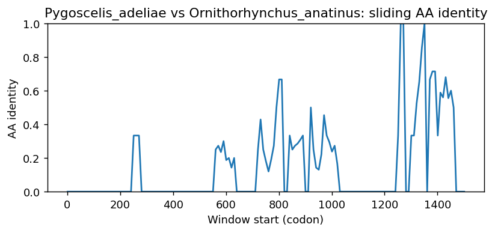
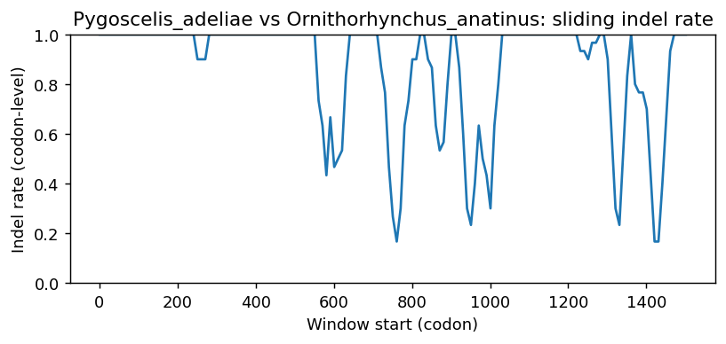
Pygoscelis_adeliae vs Oryzias_latipes
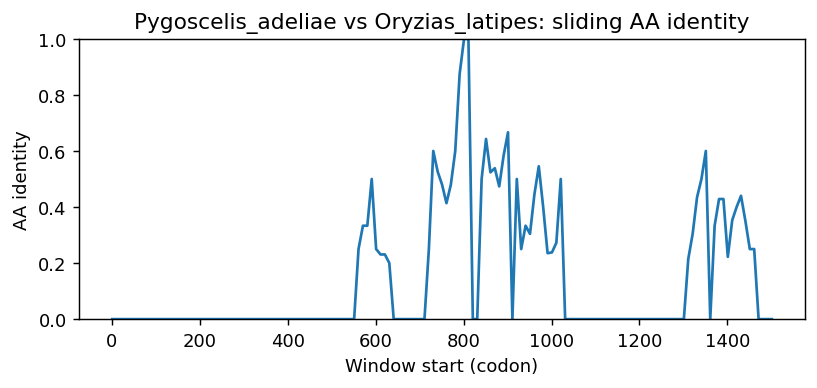
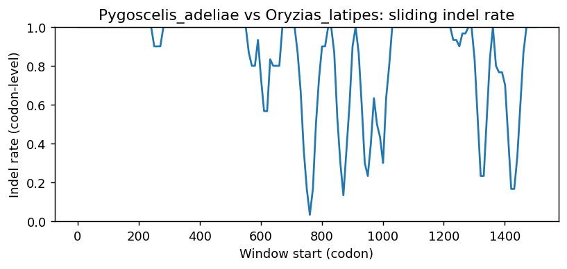
Pygoscelis_adeliae vs Cyprinodon_variegatus
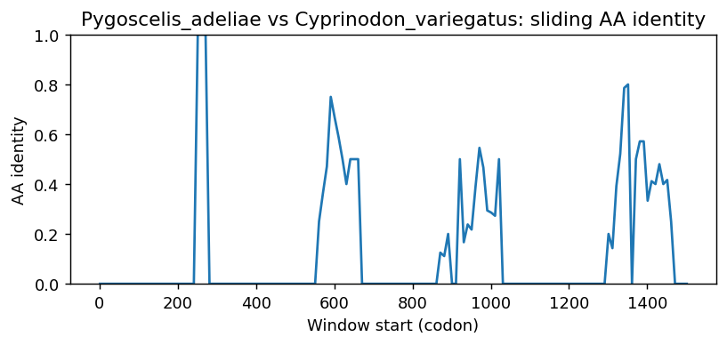
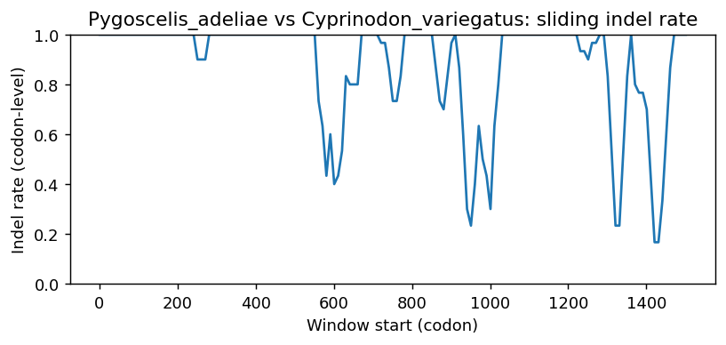
Pygoscelis_adeliae vs Bubalus_kerabau
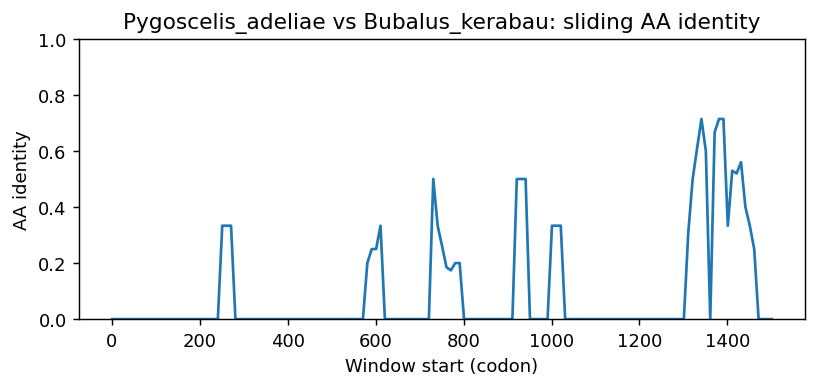
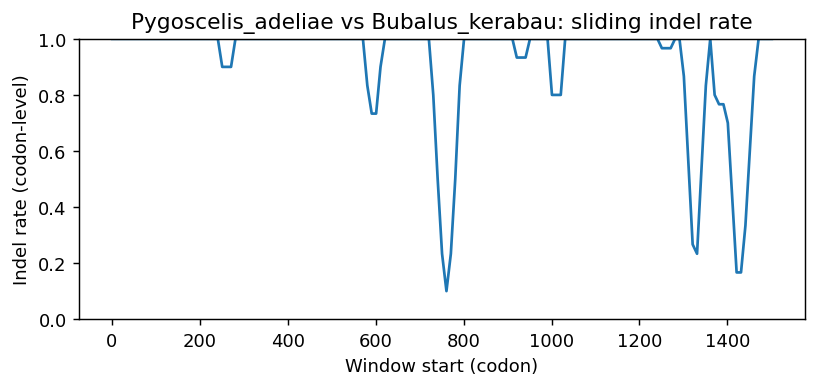
Pygoscelis_adeliae vs Mandrillus_leucophaeus
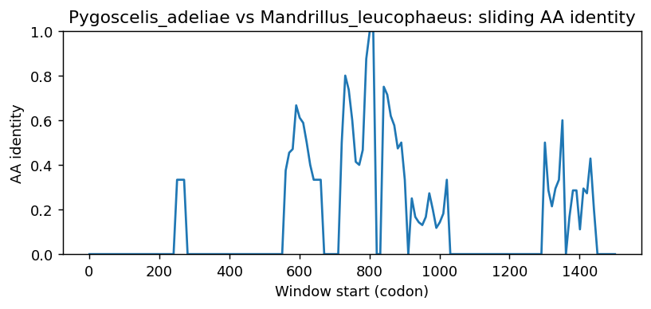
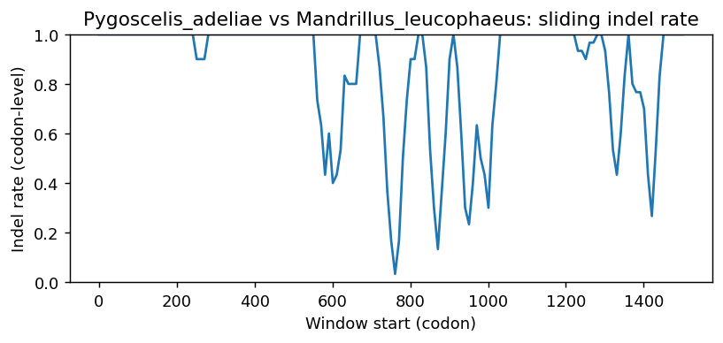
Pygoscelis_adeliae vs Phyllostomus_discolor
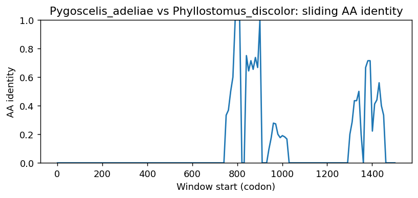
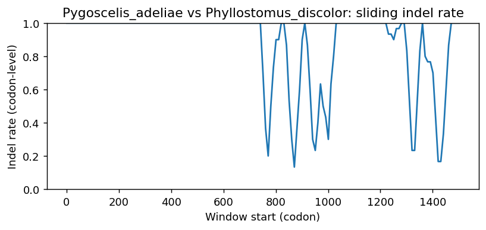
Methods (brief)
- CDS are translated (genetic code 1); proteins aligned by MAFFT when available, otherwise a progressive global aligner (BLOSUM62). Protein MSA is back-translated into a codon MSA.
- Pairwise metrics: AA/NT identities on aligned nongap positions; Ts/Tv; single-hit syn/nonsyn counts; gap events and largest contiguous gap cluster (codons); sliding-window AA identity and codon-level indel rate.
- Per-sequence diagnostics: GC content/skew, CpG density, AA low-complexity fraction via SEG-like entropy windows (win=12, H<2.2), and NT tandem repeats (homopolymers =5; di-nt =4 copies; tri-nt =3 copies).
- Correlations: Pearson/Spearman between AA identity and |GC difference|, mean AA LCR fraction, and mean NT repeat fraction across pairs.
- Risk classifier: combines identity, coverage, longest identical block, low-ID windows, max indel cluster, and up-ranks risk when mean LCR =0.25 or mean repeat =0.10 (soft-masking can remove seeds and reduce sensitivity).
Artifacts: pairwise_metrics.csv, per_sequence_composition.csv, correlations.csv, alignment_protein.faa, alignment_codon.fna.